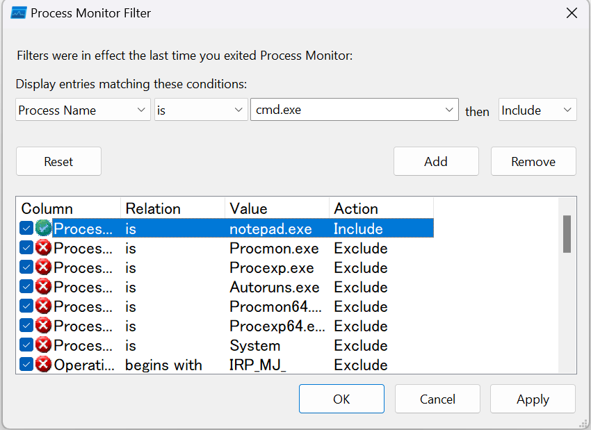
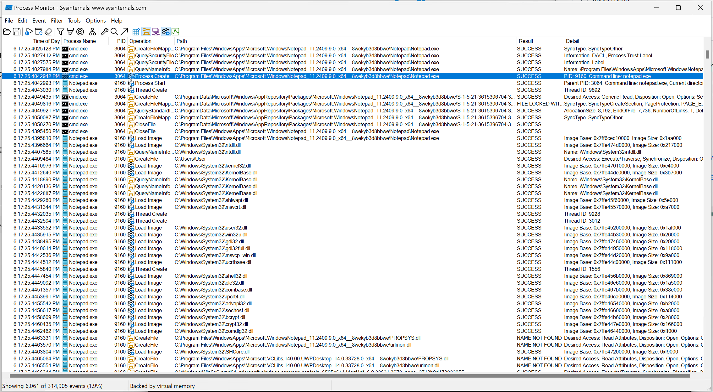
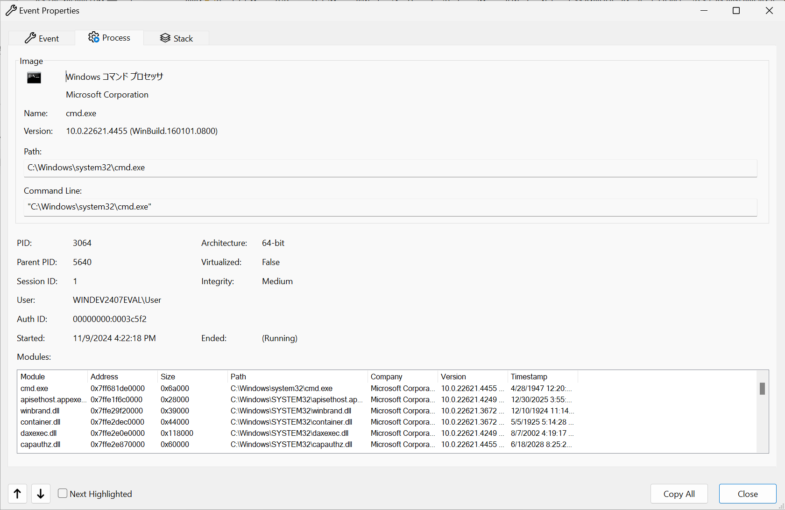
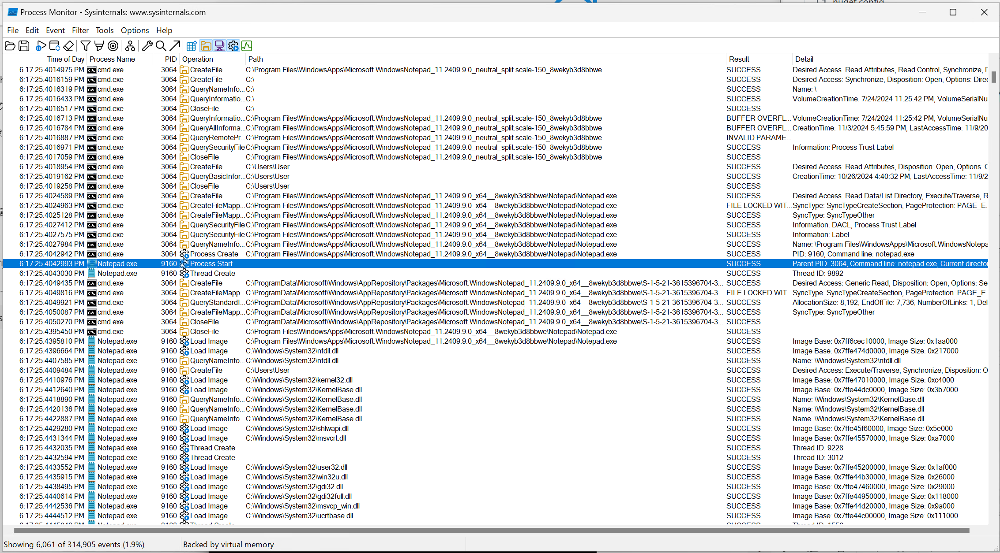
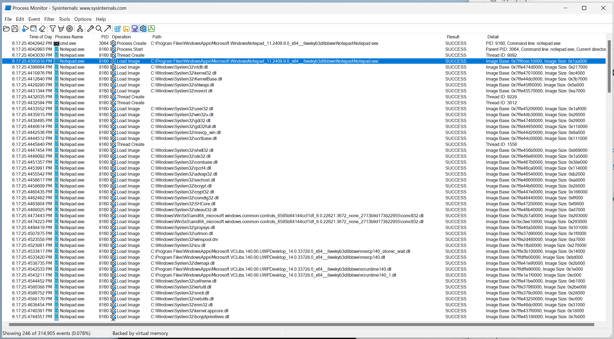
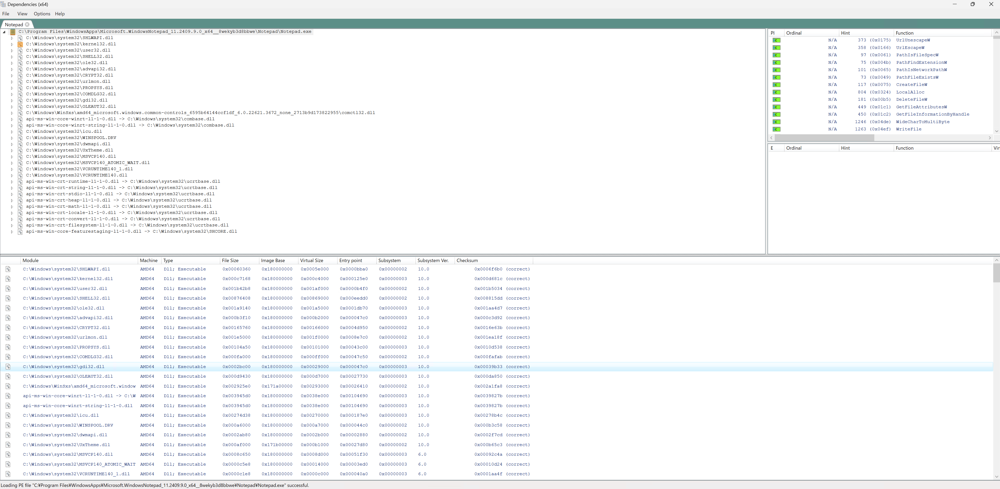

Windows でのプロセスの起動
この記事では Windows 上で cmd.exe (いわゆる「コマンドプロンプト」です) から notepad.exe (「メモ帳」です) を起動した際に起きることを観察します。
お断り
Windows はソースコードが公開されておらず、また、筆者が Windows について調べ始めたのがつい先月のことなので、内部の詳細な挙動についてはどうしても断言できません。 このため、この記事は歯切れの悪い点が多数あります。
この記事で利用した Windows のバージョンはWindows 11 バージョン 22H2 (OS ビルド 22621.4317)であり、Hyper-V 上の仮想マシンとして実行しています。
- Process monitorの準備
- CreateProcessW の呼び出し
- Notepad.exe プロセスの開始
- Notepad.exe のメモリへの読み込み
- その後の Image の読み込み
- カーネルデバッガでプロセスを観察する
- 終わりに
- 参考
Process monitorの準備
Process monitor を使って cmd.exe と notepad.exe の挙動を監視できる状態にします。
具体的には，Process monitor に cmd.exe と notepad.exe の Include フィルタを設定します。
以下の画像のように入力することで cmd.exe の挙動を監視できるようになります。

このような設定をした上で、cmd.exe から notepad.exe を起動すると以下のような状態になります。

CreateProcessW の呼び出し
notepad.exe の起動は cmd.exe から CreateProcessW を呼び出すところから始まります。
下の画像で青く選択されているイベントです。
個々のイベントをダブルクリックするとその詳細を見ることができます。
画像のまま見てもよいのですが、右下に Copy All ボタンを見つけたのでここからこのボタンを使ってコピーした内容を紹介します。

上のウィンドウでStackタブに切り替えた結果が以下です。
0 ntoskrnl.exe MmGetSectionInformation + 0x1498 0xfffff80164f90bf8 C:\Windows\system32\ntoskrnl.exe
1 ntoskrnl.exe LpcRequestPort + 0x2f27 0xfffff80164ee9bb7 C:\Windows\system32\ntoskrnl.exe
2 ntoskrnl.exe FsRtlFreeExtraCreateParameter + 0xade 0xfffff80164e8464e C:\Windows\system32\ntoskrnl.exe
3 ntoskrnl.exe setjmpex + 0x90d8 0xfffff80164c2a408 C:\Windows\system32\ntoskrnl.exe
4 ntdll.dll NtCreateUserProcess + 0x14 0x7ffe47571aa4 C:\Windows\SYSTEM32\ntdll.dll
5 KERNELBASE.dll CreateProcessInternalW + 0x2464 0x7ffe44e07624 C:\Windows\System32\KERNELBASE.dll
6 KERNELBASE.dll CreateProcessW + 0x66 0x7ffe44e3eab6 C:\Windows\System32\KERNELBASE.dll
7 KERNEL32.DLL CreateProcessW + 0x54 0x7ffe470261f4 C:\Windows\System32\KERNEL32.DLL
8 cmd.exe cmd.exe + 0x19d3f 0x7ff681df9d3f C:\Windows\system32\cmd.exe
9 cmd.exe cmd.exe + 0xd213 0x7ff681ded213 C:\Windows\system32\cmd.exe
10 cmd.exe cmd.exe + 0x10d8d 0x7ff681df0d8d C:\Windows\system32\cmd.exe
11 cmd.exe cmd.exe + 0xfe03 0x7ff681defe03 C:\Windows\system32\cmd.exe
12 cmd.exe cmd.exe + 0x25c87 0x7ff681e05c87 C:\Windows\system32\cmd.exe
13 cmd.exe cmd.exe + 0x1f876 0x7ff681dff876 C:\Windows\system32\cmd.exe
14 KERNEL32.DLL BaseThreadInitThunk + 0x1d 0x7ffe4702257d C:\Windows\System32\KERNEL32.DLL
15 ntdll.dll RtlUserThreadStart + 0x28 0x7ffe4752af08 C:\Windows\SYSTEM32\ntdll.dll
ここには cmd.exe が CreateProcessW を呼び出して notepad.exe のためのプロセスを作った際のスタックトレースが表示されており、
cmd.exe が最終的にカーネル (ntoskrnlexe)の機能を呼び出すまでに、KERNEL32.DLL、KERNELBASE.dll、ntdll.dllの 3つの DLL を経由することがわかります。
ここからは、このコールスタックを下から、つまり Notepad.exe 側から詳細に見ていきます。
CreateProcessW とは新しいプロセスとそのプライマリ スレッドを作成する Win32 API の一つです。
選択しているイベントの直後に、Process StartとThread Createの文字列が見えますが、これらがそれぞれ、新しいプロセスとそのプライマリスレッドに対応しているように見えます。
NtCreateUserProcess とは Windows の system call の一つであり、https://j00ru.vexillium.org/syscalls/nt/64/ で実際に system call の番号を調べることができます。 興味深いのはこの番号が Windows のバージョンで変化する点です。 これは静的リンクしたバイナリの互換性が Windows のバージョンをまたいで保たれないことを意味するはずです。
興味深いことに、ユーザ空間からカーネル空間に遷移する際に 3 ntoskrnl.exe setjmpex + 0x90d8 0xfffff80164c2a408 C:\Windows\system32\ntoskrnl.exe を経由しており、setjmpex が呼び出されていることがわかります。
この setjmpex を呼び出す理由はわかっていませんが、カーネル内で処理が失敗した場合に longjmp で戻ることができるようにするためであろうと推測しています。
FsRtlFreeExtraCreateParameter、LpcRequestPort、MmGetSectionInformation については詳細がわかりませんでした。 ソースコードが公開されていないとこういう点がつらいですね。
Notepad.exe プロセスの開始
次は Notepad.exe の Process start イベントの内容を見ます。

Event タブ
まず、Event タブからは環境変数、親プロセスの PID など Linux と同様の情報が渡されていることがわかります。
Date: 11/9/2024 6:17:25.4042993 PM
Thread: 11076
Class: Process
Operation: Process Start
Result: SUCCESS
Path:
Duration: 0.0000000
Parent PID: 3064
Command line: notepad.exe
Current directory: C:\Users\User\
Environment:
=::=::\
=C:=C:\Users\User
ALLUSERSPROFILE=C:\ProgramData
APPDATA=C:\Users\User\AppData\Roaming
CommonProgramFiles=C:\Program Files\Common Files
CommonProgramFiles(x86)=C:\Program Files (x86)\Common Files
CommonProgramW6432=C:\Program Files\Common Files
COMPUTERNAME=WINDEV2407EVAL
ComSpec=C:\Windows\system32\cmd.exe
DriverData=C:\Windows\System32\Drivers\DriverData
EFC_5640=1
FPS_BROWSER_APP_PROFILE_STRING=Internet Explorer
FPS_BROWSER_USER_PROFILE_STRING=Default
HOMEDRIVE=C:
HOMEPATH=\Users\User
LOCALAPPDATA=C:\Users\User\AppData\Local
LOGONSERVER=\\WINDEV2407EVAL
NUMBER_OF_PROCESSORS=6
OneDrive=C:\Users\User\OneDrive
OS=Windows_NT
Path=C:\Windows\system32;C:\Windows;C:\Windows\System32\Wbem;C:\Windows\System32\WindowsPowerShell\v1.0\;C:\Windows\System32\OpenSSH\;C:\Program Files\Microsoft SQL Server\150\Tools\Binn\;C:\Program Files\Microsoft SQL Server\Client SDK\ODBC\170\Tools\Binn\;C:\Program Files\dotnet\;C:\Program Files (x86)\Windows Kits\10\Windows Performance Toolkit\;C:\Users\User\AppData\Local\Microsoft\WindowsApps;
PATHEXT=.COM;.EXE;.BAT;.CMD;.VBS;.VBE;.JS;.JSE;.WSF;.WSH;.MSC
PROCESSOR_ARCHITECTURE=AMD64
PROCESSOR_IDENTIFIER=AMD64 Family 25 Model 80 Stepping 0, AuthenticAMD
PROCESSOR_LEVEL=25
PROCESSOR_REVISION=5000
ProgramData=C:\ProgramData
ProgramFiles=C:\Program Files
ProgramFiles(x86)=C:\Program Files (x86)
ProgramW6432=C:\Program Files
PROMPT=$P$G
PSModulePath=C:\Program Files\WindowsPowerShell\Modules;C:\Windows\system32\WindowsPowerShell\v1.0\Modules
PUBLIC=C:\Users\Public
SESSIONNAME=Console
SystemDrive=C:
SystemRoot=C:\Windows
TEMP=C:\Users\User\AppData\Local\Temp
TMP=C:\Users\User\AppData\Local\Temp
USERDOMAIN=WINDEV2407EVAL
USERDOMAIN_ROAMINGPROFILE=WINDEV2407EVAL
USERNAME=User
USERPROFILE=C:\Users\User
windir=C:\Windows
Process タブ
Process タブには PID や環境変数、カレントディレクトリなどのそのプロセス固有の情報が表示されています。
また、Modules という項目があり、プロセス内にロードされている .exe や .dll の一覧があります。
この時点では何も読み込まれていないため空となっています。
Description:
Company:
Name: Notepad.exe
Version:
Path: C:\Program Files\WindowsApps\Microsoft.WindowsNotepad_11.2409.9.0_x64__8wekyb3d8bbwe\Notepad\Notepad.exe
Command Line: notepad.exe
PID: 9160
Parent PID: 3064
Session ID: 1
User: WINDEV2407EVAL\User
Auth ID: 00000000:0003c5f2
Architecture: 64-bit
Virtualized: False
Integrity: Medium
Started: 11/9/2024 6:17:25 PM
Ended: 11/9/2024 6:17:25 PM
Modules:
Stack タブ
Stack タブを見るとカーネル (ntoskrnl.exe)以外の関数についてシンボルの情報が消えています。
しかし、良く見比べるとこれは CreateProcessW の呼び出し で見たアドレスと同一です。
シンボル名が消えてしまったのは、プロセス内に対応する.dllが読み込まれていないせいであると考えています。
0 ntoskrnl.exe MmGetSectionInformation + 0x179e 0xfffff80164f90efe C:\Windows\system32\ntoskrnl.exe
1 ntoskrnl.exe LpcRequestPort + 0x2c8c 0xfffff80164ee991c C:\Windows\system32\ntoskrnl.exe
2 ntoskrnl.exe FsRtlFreeExtraCreateParameter + 0xade 0xfffff80164e8464e C:\Windows\system32\ntoskrnl.exe
3 ntoskrnl.exe setjmpex + 0x90d8 0xfffff80164c2a408 C:\Windows\system32\ntoskrnl.exe
4 <unknown> 0x7ffe47571aa4 0x7ffe47571aa4
5 <unknown> 0x7ffe44e07624 0x7ffe44e07624
6 <unknown> 0x7ffe44e3eab6 0x7ffe44e3eab6
7 <unknown> 0x7ffe470261f4 0x7ffe470261f4
8 <unknown> 0x7ff681df9d3f 0x7ff681df9d3f
9 <unknown> 0x7ff681ded213 0x7ff681ded213
10 <unknown> 0x7ff681df0d8d 0x7ff681df0d8d
11 <unknown> 0x7ff681defe03 0x7ff681defe03
12 <unknown> 0x7ff681e05c87 0x7ff681e05c87
13 <unknown> 0x7ff681dff876 0x7ff681dff876
14 <unknown> 0x7ffe4702257d 0x7ffe4702257d
15 <unknown> 0x7ffe4752af08 0x7ffe4752af08
Notepad.exe のメモリへの読み込み
プロセスを起動した後は、各種 Image (.exe と .dll) の読み込みが始まります。
まず、notepad.exe 本体をメモリ上に展開します。

読み込みが完了すると Process タブの Modeuls に読み込まれた Image が追加されます。
Description:
Company:
Name: Notepad.exe
Version:
Path: C:\Program Files\WindowsApps\Microsoft.WindowsNotepad_11.2409.9.0_x64__8wekyb3d8bbwe\Notepad\Notepad.exe
Command Line: notepad.exe
PID: 9160
Parent PID: 3064
Session ID: 1
User: WINDEV2407EVAL\User
Auth ID: 00000000:0003c5f2
Architecture: 64-bit
Virtualized: False
Integrity: Medium
Started: 11/9/2024 6:17:25 PM
Ended: 11/9/2024 6:17:25 PM
Modules:
Notepad.exe 0x7ff6cec10000 0x1aa000 C:\Program Files\WindowsApps\Microsoft.WindowsNotepad_11.2409.9.0_x64__8wekyb3d8bbwe\Notepad\Notepad.exe 10/8/2024 5:38:54 PM
その後の Image の読み込み
notepad.exe の後は様々な Image が読み込まれていきます。
非常に長いので折りたたんでおきますが、ntdll.dll、kernel32.dll、KernelBase.dll などの基本的なものからメモリ上に読み込まれていくようです。
更に憶測を書くと、最初にntdll.dllを読み込んでいくことから、依存関係の葉になる DLL から読み込んでいくと考えられます。
Process monitor で Load Image のみを CSV として保存したもの
``` "Time of Day","Process Name","PID","Operation","Path","Result","Detail" "6:17:25.4395810 PM","Notepad.exe","9160","Load Image","C:\Program Files\WindowsApps\Microsoft.WindowsNotepad_11.2409.9.0_x64__8wekyb3d8bbwe\Notepad\Notepad.exe","SUCCESS","Image Base: 0x7ff6cec10000, Image Size: 0x1aa000" "6:17:25.4396664 PM","Notepad.exe","9160","Load Image","C:\Windows\System32\ntdll.dll","SUCCESS","Image Base: 0x7ffe474d0000, Image Size: 0x217000" "6:17:25.4410976 PM","Notepad.exe","9160","Load Image","C:\Windows\System32\kernel32.dll","SUCCESS","Image Base: 0x7ffe47010000, Image Size: 0xc4000" "6:17:25.4412640 PM","Notepad.exe","9160","Load Image","C:\Windows\System32\KernelBase.dll","SUCCESS","Image Base: 0x7ffe44dc0000, Image Size: 0x3b7000" "6:17:25.4429280 PM","Notepad.exe","9160","Load Image","C:\Windows\System32\shlwapi.dll","SUCCESS","Image Base: 0x7ffe45f60000, Image Size: 0x5e000" "6:17:25.4431344 PM","Notepad.exe","9160","Load Image","C:\Windows\System32\msvcrt.dll","SUCCESS","Image Base: 0x7ffe45570000, Image Size: 0xa7000" "6:17:25.4433552 PM","Notepad.exe","9160","Load Image","C:\Windows\System32\user32.dll","SUCCESS","Image Base: 0x7ffe45200000, Image Size: 0x1af000" "6:17:25.4435915 PM","Notepad.exe","9160","Load Image","C:\Windows\System32\win32u.dll","SUCCESS","Image Base: 0x7ffe44b30000, Image Size: 0x26000" "6:17:25.4438495 PM","Notepad.exe","9160","Load Image","C:\Windows\System32\gdi32.dll","SUCCESS","Image Base: 0x7ffe47460000, Image Size: 0x29000" "6:17:25.4440614 PM","Notepad.exe","9160","Load Image","C:\Windows\System32\gdi32full.dll","SUCCESS","Image Base: 0x7ffe44950000, Image Size: 0x118000" "6:17:25.4442536 PM","Notepad.exe","9160","Load Image","C:\Windows\System32\msvcp_win.dll","SUCCESS","Image Base: 0x7ffe44d20000, Image Size: 0x9a000" "6:17:25.4444512 PM","Notepad.exe","9160","Load Image","C:\Windows\System32\ucrtbase.dll","SUCCESS","Image Base: 0x7ffe44c00000, Image Size: 0x111000" "6:17:25.4447454 PM","Notepad.exe","9160","Load Image","C:\Windows\System32\shell32.dll","SUCCESS","Image Base: 0x7ffe456b0000, Image Size: 0x869000" "6:17:25.4449092 PM","Notepad.exe","9160","Load Image","C:\Windows\System32\ole32.dll","SUCCESS","Image Base: 0x7ffe46e60000, Image Size: 0x1a5000" "6:17:25.4451357 PM","Notepad.exe","9160","Load Image","C:\Windows\System32\combase.dll","SUCCESS","Image Base: 0x7ffe467b0000, Image Size: 0x38e000" "6:17:25.4453991 PM","Notepad.exe","9160","Load Image","C:\Windows\System32\rpcrt4.dll","SUCCESS","Image Base: 0x7ffe46ca0000, Image Size: 0x114000" "6:17:25.4455542 PM","Notepad.exe","9160","Load Image","C:\Windows\System32\advapi32.dll","SUCCESS","Image Base: 0x7ffe46540000, Image Size: 0xb2000" "6:17:25.4456617 PM","Notepad.exe","9160","Load Image","C:\Windows\System32\sechost.dll","SUCCESS","Image Base: 0x7ffe46600000, Image Size: 0xa8000" "6:17:25.4458609 PM","Notepad.exe","9160","Load Image","C:\Windows\System32\bcrypt.dll","SUCCESS","Image Base: 0x7ffe44b60000, Image Size: 0x28000" "6:17:25.4460435 PM","Notepad.exe","9160","Load Image","C:\Windows\System32\crypt32.dll","SUCCESS","Image Base: 0x7ffe447e0000, Image Size: 0x166000" "6:17:25.4462462 PM","Notepad.exe","9160","Load Image","C:\Windows\System32\comdlg32.dll","SUCCESS","Image Base: 0x7ffe46440000, Image Size: 0xff000" "6:17:25.4463804 PM","Notepad.exe","9160","Load Image","C:\Windows\System32\SHCore.dll","SUCCESS","Image Base: 0x7ffe47200000, Image Size: 0xf9000" "6:17:25.4468025 PM","Notepad.exe","9160","Load Image","C:\Windows\System32\oleaut32.dll","SUCCESS","Image Base: 0x7ffe46b40000, Image Size: 0xd7000" "6:17:25.4473443 PM","Notepad.exe","9160","Load Image","C:\Windows\WinSxS\amd64_microsoft.windows.common-controls_6595b64144ccf1df_6.0.22621.3672_none_2713b9d173822955\comctl32.dll","SUCCESS","Image Base: 0x7ffe2b7a0000, Image Size: 0x293000" "6:17:25.4474223 PM","Notepad.exe","9160","Load Image","C:\Windows\WinSxS\amd64_microsoft.windows.common-controls_6595b64144ccf1df_6.0.22621.3672_none_2713b9d173822955\comctl32.dll","SUCCESS","Image Base: 0x1bc3ee10000, Image Size: 0x293000" "6:17:25.4498419 PM","Notepad.exe","9160","Load Image","C:\Windows\System32\propsys.dll","SUCCESS","Image Base: 0x7ffe40a50000, Image Size: 0x101000" "6:17:25.4507875 PM","Notepad.exe","9160","Load Image","C:\Windows\System32\urlmon.dll","SUCCESS","Image Base: 0x7ffe37d90000, Image Size: 0x1f0000" "6:17:25.4523558 PM","Notepad.exe","9160","Load Image","C:\Windows\System32\winspool.drv","SUCCESS","Image Base: 0x7ffe2d460000, Image Size: 0xa7000" "6:17:25.4523891 PM","Notepad.exe","9160","Load Image","C:\Windows\System32\icu.dll","SUCCESS","Image Base: 0x7ffe1fb80000, Image Size: 0x270000" "6:17:25.4533417 PM","Notepad.exe","9160","Load Image","C:\Program Files\WindowsApps\Microsoft.VCLibs.140.00.UWPDesktop_14.0.33728.0_x64__8wekyb3d8bbwe\msvcp140_atomic_wait.dll","SUCCESS","Image Base: 0x7ffe3b100000, Image Size: 0x14000" "6:17:25.4533420 PM","Notepad.exe","9160","Load Image","C:\Program Files\WindowsApps\Microsoft.VCLibs.140.00.UWPDesktop_14.0.33728.0_x64__8wekyb3d8bbwe\msvcp140.dll","SUCCESS","Image Base: 0x7ffdffe00000, Image Size: 0x8d000" "6:17:25.4538735 PM","Notepad.exe","9160","Load Image","C:\Windows\System32\dwmapi.dll","SUCCESS","Image Base: 0x7ffe41e90000, Image Size: 0x2b000" "6:17:25.4542533 PM","Notepad.exe","9160","Load Image","C:\Program Files\WindowsApps\Microsoft.VCLibs.140.00.UWPDesktop_14.0.33728.0_x64__8wekyb3d8bbwe\vcruntime140.dll","SUCCESS","Image Base: 0x7ffdffe90000, Image Size: 0x1e000" "6:17:25.4543211 PM","Notepad.exe","9160","Load Image","C:\Program Files\WindowsApps\Microsoft.VCLibs.140.00.UWPDesktop_14.0.33728.0_x64__8wekyb3d8bbwe\vcruntime140_1.dll","SUCCESS","Image Base: 0x7ffe1e1f0000, Image Size: 0xc000" "6:17:25.4544452 PM","Notepad.exe","9160","Load Image","C:\Windows\System32\uxtheme.dll","SUCCESS","Image Base: 0x7ffe41be0000, Image Size: 0xb1000" "6:17:25.4580388 PM","Notepad.exe","9160","Load Image","C:\Windows\System32\iertutil.dll","SUCCESS","Image Base: 0x7ffe379f0000, Image Size: 0x2be000" "6:17:25.4586752 PM","Notepad.exe","9160","Load Image","C:\Windows\System32\srvcli.dll","SUCCESS","Image Base: 0x7ffe379c0000, Image Size: 0x28000" "6:17:25.4588170 PM","Notepad.exe","9160","Load Image","C:\Windows\System32\netutils.dll","SUCCESS","Image Base: 0x7ffe43250000, Image Size: 0xc000" "6:17:25.4638454 PM","Notepad.exe","9160","Load Image","C:\Windows\System32\imm32.dll","SUCCESS","Image Base: 0x7ffe46dc0000, Image Size: 0x31000" "6:17:25.4740391 PM","Notepad.exe","9160","Load Image","C:\Windows\System32\kernel.appcore.dll","SUCCESS","Image Base: 0x7ffe437f0000, Image Size: 0x18000" "6:17:25.4744551 PM","Notepad.exe","9160","Load Image","C:\Windows\System32\bcryptprimitives.dll","SUCCESS","Image Base: 0x7ffe45180000, Image Size: 0x7b000" "6:17:25.4752077 PM","Notepad.exe","9160","Load Image","C:\Windows\System32\clbcatq.dll","SUCCESS","Image Base: 0x7ffe470f0000, Image Size: 0xb0000" "6:17:25.4772337 PM","Notepad.exe","9160","Load Image","C:\Windows\System32\MrmCoreR.dll","SUCCESS","Image Base: 0x7ffe35e90000, Image Size: 0x116000" "6:17:25.4787096 PM","Notepad.exe","9160","Load Image","C:\Windows\System32\Windows.StateRepositoryClient.dll","SUCCESS","Image Base: 0x7ffe38c70000, Image Size: 0x3d000" "6:17:25.4797918 PM","Notepad.exe","9160","Load Image","C:\Windows\System32\Windows.StateRepositoryCore.dll","SUCCESS","Image Base: 0x7ffe38d60000, Image Size: 0x1a000" "6:17:25.4989647 PM","Notepad.exe","9160","Load Image","C:\Windows\System32\profapi.dll","SUCCESS","Image Base: 0x7ffe44710000, Image Size: 0x27000" "6:17:25.5005249 PM","Notepad.exe","9160","Load Image","C:\Windows\System32\AppXDeploymentClient.dll","SUCCESS","Image Base: 0x7ffe39690000, Image Size: 0x144000" "6:17:25.5033899 PM","Notepad.exe","9160","Load Image","C:\Windows\System32\Windows.UI.dll","SUCCESS","Image Base: 0x7ffe35080000, Image Size: 0x179000" "6:17:25.5075642 PM","Notepad.exe","9160","Load Image","C:\Windows\System32\BCP47mrm.dll","SUCCESS","Image Base: 0x7ffe34bf0000, Image Size: 0x32000" "6:17:25.5179066 PM","Notepad.exe","9160","Load Image","C:\Windows\System32\twinapi.appcore.dll","SUCCESS","Image Base: 0x7ffe3bdc0000, Image Size: 0x2a2000" "6:17:25.5202394 PM","Notepad.exe","9160","Load Image","C:\Windows\System32\WinTypes.dll","SUCCESS","Image Base: 0x7ffe425c0000, Image Size: 0x13f000" "6:17:25.5234651 PM","Notepad.exe","9160","Load Image","C:\Windows\System32\daxexec.dll","SUCCESS","Image Base: 0x7ffe2e0e0000, Image Size: 0x118000" "6:17:25.5266836 PM","Notepad.exe","9160","Load Image","C:\Windows\System32\container.dll","SUCCESS","Image Base: 0x7ffe2dec0000, Image Size: 0x44000" "6:17:25.5267832 PM","Notepad.exe","9160","Load Image","C:\Windows\System32\userenv.dll","SUCCESS","Image Base: 0x7ffe43cf0000, Image Size: 0x28000" "6:17:25.5295790 PM","Notepad.exe","9160","Load Image","C:\Windows\System32\ntmarta.dll","SUCCESS","Image Base: 0x7ffe43900000, Image Size: 0x34000" "6:17:25.5318905 PM","Notepad.exe","9160","Load Image","C:\Windows\System32\capauthz.dll","SUCCESS","Image Base: 0x7ffe2e870000, Image Size: 0x60000" "6:17:25.5400752 PM","Notepad.exe","7592","Load Image","C:\Program Files\WindowsApps\Microsoft.WindowsNotepad_11.2409.9.0_x64__8wekyb3d8bbwe\Notepad\Notepad.exe","SUCCESS","Image Base: 0x7ff6cec10000, Image Size: 0x1aa000" "6:17:25.5401655 PM","Notepad.exe","7592","Load Image","C:\Windows\System32\ntdll.dll","SUCCESS","Image Base: 0x7ffe474d0000, Image Size: 0x217000" "6:17:25.5414237 PM","Notepad.exe","7592","Load Image","C:\Windows\System32\kernel32.dll","SUCCESS","Image Base: 0x7ffe47010000, Image Size: 0xc4000" "6:17:25.5415898 PM","Notepad.exe","7592","Load Image","C:\Windows\System32\KernelBase.dll","SUCCESS","Image Base: 0x7ffe44dc0000, Image Size: 0x3b7000" "6:17:25.5432778 PM","Notepad.exe","7592","Load Image","C:\Windows\System32\shlwapi.dll","SUCCESS","Image Base: 0x7ffe45f60000, Image Size: 0x5e000" "6:17:25.5435118 PM","Notepad.exe","7592","Load Image","C:\Windows\System32\msvcrt.dll","SUCCESS","Image Base: 0x7ffe45570000, Image Size: 0xa7000" "6:17:25.5438505 PM","Notepad.exe","7592","Load Image","C:\Windows\System32\user32.dll","SUCCESS","Image Base: 0x7ffe45200000, Image Size: 0x1af000" "6:17:25.5440887 PM","Notepad.exe","7592","Load Image","C:\Windows\System32\win32u.dll","SUCCESS","Image Base: 0x7ffe44b30000, Image Size: 0x26000" "6:17:25.5444493 PM","Notepad.exe","7592","Load Image","C:\Windows\System32\gdi32.dll","SUCCESS","Image Base: 0x7ffe47460000, Image Size: 0x29000" "6:17:25.5447160 PM","Notepad.exe","7592","Load Image","C:\Windows\System32\gdi32full.dll","SUCCESS","Image Base: 0x7ffe44950000, Image Size: 0x118000" "6:17:25.5448743 PM","Notepad.exe","7592","Load Image","C:\Windows\System32\msvcp_win.dll","SUCCESS","Image Base: 0x7ffe44d20000, Image Size: 0x9a000" "6:17:25.5450180 PM","Notepad.exe","7592","Load Image","C:\Windows\System32\ucrtbase.dll","SUCCESS","Image Base: 0x7ffe44c00000, Image Size: 0x111000" "6:17:25.5453164 PM","Notepad.exe","7592","Load Image","C:\Windows\System32\shell32.dll","SUCCESS","Image Base: 0x7ffe456b0000, Image Size: 0x869000" "6:17:25.5454996 PM","Notepad.exe","7592","Load Image","C:\Windows\System32\ole32.dll","SUCCESS","Image Base: 0x7ffe46e60000, Image Size: 0x1a5000" "6:17:25.5457209 PM","Notepad.exe","7592","Load Image","C:\Windows\System32\combase.dll","SUCCESS","Image Base: 0x7ffe467b0000, Image Size: 0x38e000" "6:17:25.5459302 PM","Notepad.exe","7592","Load Image","C:\Windows\System32\rpcrt4.dll","SUCCESS","Image Base: 0x7ffe46ca0000, Image Size: 0x114000" "6:17:25.5461363 PM","Notepad.exe","7592","Load Image","C:\Windows\System32\advapi32.dll","SUCCESS","Image Base: 0x7ffe46540000, Image Size: 0xb2000" "6:17:25.5462687 PM","Notepad.exe","7592","Load Image","C:\Windows\System32\sechost.dll","SUCCESS","Image Base: 0x7ffe46600000, Image Size: 0xa8000" "6:17:25.5464297 PM","Notepad.exe","7592","Load Image","C:\Windows\System32\bcrypt.dll","SUCCESS","Image Base: 0x7ffe44b60000, Image Size: 0x28000" "6:17:25.5467506 PM","Notepad.exe","7592","Load Image","C:\Windows\System32\crypt32.dll","SUCCESS","Image Base: 0x7ffe447e0000, Image Size: 0x166000" "6:17:25.5469890 PM","Notepad.exe","7592","Load Image","C:\Windows\System32\comdlg32.dll","SUCCESS","Image Base: 0x7ffe46440000, Image Size: 0xff000" "6:17:25.5472905 PM","Notepad.exe","7592","Load Image","C:\Windows\System32\SHCore.dll","SUCCESS","Image Base: 0x7ffe47200000, Image Size: 0xf9000" "6:17:25.5476356 PM","Notepad.exe","7592","Load Image","C:\Windows\System32\oleaut32.dll","SUCCESS","Image Base: 0x7ffe46b40000, Image Size: 0xd7000" "6:17:25.5481757 PM","Notepad.exe","7592","Load Image","C:\Windows\WinSxS\amd64_microsoft.windows.common-controls_6595b64144ccf1df_6.0.22621.3672_none_2713b9d173822955\comctl32.dll","SUCCESS","Image Base: 0x7ffe2b7a0000, Image Size: 0x293000" "6:17:25.5484907 PM","Notepad.exe","7592","Load Image","C:\Windows\WinSxS\amd64_microsoft.windows.common-controls_6595b64144ccf1df_6.0.22621.3672_none_2713b9d173822955\comctl32.dll","SUCCESS","Image Base: 0x2314cae0000, Image Size: 0x293000" "6:17:25.5502899 PM","Notepad.exe","7592","Load Image","C:\Windows\System32\urlmon.dll","SUCCESS","Image Base: 0x7ffe37d90000, Image Size: 0x1f0000" "6:17:25.5511017 PM","Notepad.exe","7592","Load Image","C:\Windows\System32\propsys.dll","SUCCESS","Image Base: 0x7ffe40a50000, Image Size: 0x101000" "6:17:25.5520419 PM","Notepad.exe","7592","Load Image","C:\Windows\System32\icu.dll","SUCCESS","Image Base: 0x7ffe1fb80000, Image Size: 0x270000" "6:17:25.5522259 PM","Notepad.exe","7592","Load Image","C:\Windows\System32\winspool.drv","SUCCESS","Image Base: 0x7ffe2d460000, Image Size: 0xa7000" "6:17:25.5526035 PM","Notepad.exe","7592","Load Image","C:\Program Files\WindowsApps\Microsoft.VCLibs.140.00.UWPDesktop_14.0.33728.0_x64__8wekyb3d8bbwe\msvcp140.dll","SUCCESS","Image Base: 0x7ffdffe00000, Image Size: 0x8d000" "6:17:25.5528314 PM","Notepad.exe","7592","Load Image","C:\Program Files\WindowsApps\Microsoft.VCLibs.140.00.UWPDesktop_14.0.33728.0_x64__8wekyb3d8bbwe\msvcp140_atomic_wait.dll","SUCCESS","Image Base: 0x7ffe3b100000, Image Size: 0x14000" "6:17:25.5535383 PM","Notepad.exe","7592","Load Image","C:\Program Files\WindowsApps\Microsoft.VCLibs.140.00.UWPDesktop_14.0.33728.0_x64__8wekyb3d8bbwe\vcruntime140_1.dll","SUCCESS","Image Base: 0x7ffe1e1f0000, Image Size: 0xc000" "6:17:25.5536002 PM","Notepad.exe","7592","Load Image","C:\Program Files\WindowsApps\Microsoft.VCLibs.140.00.UWPDesktop_14.0.33728.0_x64__8wekyb3d8bbwe\vcruntime140.dll","SUCCESS","Image Base: 0x7ffdffe90000, Image Size: 0x1e000" "6:17:25.5537928 PM","Notepad.exe","7592","Load Image","C:\Windows\System32\dwmapi.dll","SUCCESS","Image Base: 0x7ffe41e90000, Image Size: 0x2b000" "6:17:25.5543140 PM","Notepad.exe","7592","Load Image","C:\Windows\System32\uxtheme.dll","SUCCESS","Image Base: 0x7ffe41be0000, Image Size: 0xb1000" "6:17:25.5564800 PM","Notepad.exe","7592","Load Image","C:\Windows\System32\iertutil.dll","SUCCESS","Image Base: 0x7ffe379f0000, Image Size: 0x2be000" "6:17:25.5579362 PM","Notepad.exe","7592","Load Image","C:\Windows\System32\netutils.dll","SUCCESS","Image Base: 0x7ffe43250000, Image Size: 0xc000" "6:17:25.5581109 PM","Notepad.exe","7592","Load Image","C:\Windows\System32\srvcli.dll","SUCCESS","Image Base: 0x7ffe379c0000, Image Size: 0x28000" "6:17:25.5613061 PM","Notepad.exe","7592","Load Image","C:\Windows\System32\imm32.dll","SUCCESS","Image Base: 0x7ffe46dc0000, Image Size: 0x31000" "6:17:25.5683636 PM","Notepad.exe","7592","Load Image","C:\Windows\System32\kernel.appcore.dll","SUCCESS","Image Base: 0x7ffe437f0000, Image Size: 0x18000" "6:17:25.5687416 PM","Notepad.exe","7592","Load Image","C:\Windows\System32\bcryptprimitives.dll","SUCCESS","Image Base: 0x7ffe45180000, Image Size: 0x7b000" "6:17:25.5693262 PM","Notepad.exe","7592","Load Image","C:\Windows\System32\clbcatq.dll","SUCCESS","Image Base: 0x7ffe470f0000, Image Size: 0xb0000" "6:17:25.5704707 PM","Notepad.exe","7592","Load Image","C:\Windows\System32\MrmCoreR.dll","SUCCESS","Image Base: 0x7ffe35e90000, Image Size: 0x116000" "6:17:25.5716413 PM","Notepad.exe","7592","Load Image","C:\Windows\System32\Windows.StateRepositoryClient.dll","SUCCESS","Image Base: 0x7ffe38c70000, Image Size: 0x3d000" "6:17:25.5722757 PM","Notepad.exe","7592","Load Image","C:\Windows\System32\Windows.StateRepositoryCore.dll","SUCCESS","Image Base: 0x7ffe38d60000, Image Size: 0x1a000" "6:17:25.5898501 PM","Notepad.exe","7592","Load Image","C:\Windows\System32\profapi.dll","SUCCESS","Image Base: 0x7ffe44710000, Image Size: 0x27000" "6:17:25.5912980 PM","Notepad.exe","7592","Load Image","C:\Windows\System32\AppXDeploymentClient.dll","SUCCESS","Image Base: 0x7ffe39690000, Image Size: 0x144000" "6:17:25.5937275 PM","Notepad.exe","7592","Load Image","C:\Windows\System32\Windows.UI.dll","SUCCESS","Image Base: 0x7ffe35080000, Image Size: 0x179000" "6:17:25.5967177 PM","Notepad.exe","7592","Load Image","C:\Windows\System32\BCP47mrm.dll","SUCCESS","Image Base: 0x7ffe34bf0000, Image Size: 0x32000" "6:17:25.6047814 PM","Notepad.exe","7592","Load Image","C:\Windows\System32\twinapi.appcore.dll","SUCCESS","Image Base: 0x7ffe3bdc0000, Image Size: 0x2a2000" "6:17:25.6067268 PM","Notepad.exe","7592","Load Image","C:\Windows\System32\WinTypes.dll","SUCCESS","Image Base: 0x7ffe425c0000, Image Size: 0x13f000" "6:17:25.6143799 PM","Notepad.exe","7592","Load Image","C:\Program Files\WindowsApps\Microsoft.WindowsNotepad_11.2409.9.0_x64__8wekyb3d8bbwe\Notepad\NotepadXamlUI.dll","SUCCESS","Image Base: 0x7ffe0c2c0000, Image Size: 0x471000" "6:17:25.6168902 PM","Notepad.exe","7592","Load Image","C:\Windows\System32\DWrite.dll","SUCCESS","Image Base: 0x7ffe3e5a0000, Image Size: 0x273000" "6:17:25.6177801 PM","Notepad.exe","7592","Load Image","C:\Program Files\WindowsApps\Microsoft.VCLibs.140.00_14.0.33519.0_x64__8wekyb3d8bbwe\msvcp140_app.dll","SUCCESS","Image Base: 0x7ffe259e0000, Image Size: 0x8c000" "6:17:25.6178065 PM","Notepad.exe","7592","Load Image","C:\Program Files\WindowsApps\Microsoft.VCLibs.140.00_14.0.33519.0_x64__8wekyb3d8bbwe\vcruntime140_app.dll","SUCCESS","Image Base: 0x7ffe25ea0000, Image Size: 0x1d000" "6:17:25.6178899 PM","Notepad.exe","7592","Load Image","C:\Program Files\WindowsApps\Microsoft.VCLibs.140.00_14.0.33519.0_x64__8wekyb3d8bbwe\vcruntime140_1_app.dll","SUCCESS","Image Base: 0x7ffe25ec0000, Image Size: 0xc000" "6:17:25.6198880 PM","Notepad.exe","7592","Load Image","C:\Windows\System32\Windows.UI.Xaml.dll","SUCCESS","Image Base: 0x7ffe33860000, Image Size: 0x1225000" "6:17:25.6219774 PM","Notepad.exe","7592","Load Image","C:\Windows\System32\powrprof.dll","SUCCESS","Image Base: 0x7ffe446c0000, Image Size: 0x4d000" "6:17:25.6220350 PM","Notepad.exe","7592","Load Image","C:\Windows\System32\ntmarta.dll","SUCCESS","Image Base: 0x7ffe43900000, Image Size: 0x34000" "6:17:25.6232111 PM","Notepad.exe","7592","Load Image","C:\Windows\System32\umpdc.dll","SUCCESS","Image Base: 0x7ffe446a0000, Image Size: 0x13000" "6:17:25.6317525 PM","Notepad.exe","7592","Load Image","C:\Windows\System32\OneCoreUAPCommonProxyStub.dll","SUCCESS","Image Base: 0x7ffe3b2f0000, Image Size: 0x62c000" "6:17:25.6334658 PM","Notepad.exe","7592","Load Image","C:\Program Files\WindowsApps\Microsoft.WindowsNotepad_11.2409.9.0_x64__8wekyb3d8bbwe\Notepad\msptls.dll","SUCCESS","Image Base: 0x7ffe308e0000, Image Size: 0x1af000" "6:17:25.6340523 PM","Notepad.exe","7592","Load Image","C:\Program Files\WindowsApps\Microsoft.WindowsNotepad_11.2409.9.0_x64__8wekyb3d8bbwe\Notepad\riched20.dll","SUCCESS","Image Base: 0x7ffe100b0000, Image Size: 0x33d000" "6:17:25.6367326 PM","Notepad.exe","7592","Load Image","C:\Windows\System32\oleacc.dll","SUCCESS","Image Base: 0x7ffe298c0000, Image Size: 0x69000" "6:17:25.6393696 PM","Notepad.exe","7592","Load Image","C:\Windows\System32\Windows.Storage.ApplicationData.dll","SUCCESS","Image Base: 0x7ffe260b0000, Image Size: 0x67000" "6:17:25.6477026 PM","Notepad.exe","7592","Load Image","C:\Windows\System32\windows.storage.dll","SUCCESS","Image Base: 0x7ffe42700000, Image Size: 0x8ff000" "6:17:25.6642676 PM","Notepad.exe","7592","Load Image","C:\Windows\System32\InputHost.dll","SUCCESS","Image Base: 0x7ffe32800000, Image Size: 0x213000" "6:17:25.6654833 PM","Notepad.exe","7592","Load Image","C:\Windows\System32\CoreMessaging.dll","SUCCESS","Image Base: 0x7ffe3ff50000, Image Size: 0x133000" "6:17:25.6691851 PM","Notepad.exe","7592","Load Image","C:\Windows\System32\cryptbase.dll","SUCCESS","Image Base: 0x7ffe43f80000, Image Size: 0xc000" "6:17:25.6734287 PM","Notepad.exe","7592","Load Image","C:\Windows\System32\msctf.dll","SUCCESS","Image Base: 0x7ffe47300000, Image Size: 0x160000" "6:17:25.6791635 PM","Notepad.exe","7592","Load Image","C:\Windows\System32\UiaManager.dll","SUCCESS","Image Base: 0x7ffe2e770000, Image Size: 0xf1000" "6:17:25.6907260 PM","Notepad.exe","7592","Load Image","C:\Windows\System32\WindowManagementAPI.dll","SUCCESS","Image Base: 0x7ffe3ce00000, Image Size: 0x1f7000" "6:17:25.6991061 PM","Notepad.exe","7592","Load Image","C:\Windows\System32\dxgi.dll","SUCCESS","Image Base: 0x7ffe41d80000, Image Size: 0xf7000" "6:17:25.7003201 PM","Notepad.exe","7592","Load Image","C:\Windows\System32\DXCore.dll","SUCCESS","Image Base: 0x7ffe41f10000, Image Size: 0x37000" "6:17:25.7013398 PM","Notepad.exe","7592","Load Image","C:\Windows\System32\ResourcePolicyClient.dll","SUCCESS","Image Base: 0x7ffe421b0000, Image Size: 0x15000" "6:17:25.7042977 PM","Notepad.exe","7592","Load Image","C:\Windows\System32\directxdatabasehelper.dll","SUCCESS","Image Base: 0x7ffe3dac0000, Image Size: 0x49000" "6:17:25.7056869 PM","Notepad.exe","7592","Load Image","C:\Windows\System32\dcomp.dll","SUCCESS","Image Base: 0x7ffe3faf0000, Image Size: 0x255000" "6:17:25.7073690 PM","Notepad.exe","7592","Load Image","C:\Windows\System32\d3d11.dll","SUCCESS","Image Base: 0x7ffe3ec10000, Image Size: 0x257000" "6:17:25.7094129 PM","Notepad.exe","7592","Load Image","C:\Windows\System32\d3d10warp.dll","SUCCESS","Image Base: 0x7ffe3c6e0000, Image Size: 0x713000" "6:17:25.7105351 PM","Notepad.exe","7592","Load Image","C:\Windows\System32\Windows.UI.Immersive.dll","SUCCESS","Image Base: 0x7ffe336e0000, Image Size: 0x175000" "6:17:25.7149383 PM","Notepad.exe","7592","Load Image","C:\Windows\System32\d2d1.dll","SUCCESS","Image Base: 0x7ffe3ee70000, Image Size: 0x5ee000" "6:17:25.7164145 PM","Notepad.exe","7592","Load Image","C:\Windows\System32\DataExchange.dll","SUCCESS","Image Base: 0x7ffe29860000, Image Size: 0x5e000" "6:17:25.7192118 PM","Notepad.exe","7592","Load Image","C:\Windows\System32\TextShaping.dll","SUCCESS","Image Base: 0x7ffe330e0000, Image Size: 0xb1000" "6:17:25.7243309 PM","Notepad.exe","7592","Load Image","C:\Program Files\WindowsApps\Microsoft.UI.Xaml.2.8_8.2310.30001.0_x64__8wekyb3d8bbwe\Microsoft.UI.Xaml.dll","SUCCESS","Image Base: 0x7ffe10860000, Image Size: 0x5e3000" "6:17:25.7407215 PM","Notepad.exe","7592","Load Image","C:\Windows\System32\Windows.UI.Xaml.Controls.dll","SUCCESS","Image Base: 0x7ffe32a20000, Image Size: 0x410000" "6:17:25.7426174 PM","Notepad.exe","7592","Load Image","C:\Windows\System32\BCP47Langs.dll","SUCCESS","Image Base: 0x7ffe35250000, Image Size: 0x60000" "6:17:25.7540244 PM","Notepad.exe","7592","Load Image","C:\Windows\System32\Windows.ApplicationModel.dll","SUCCESS","Image Base: 0x7ffe2dae0000, Image Size: 0x100000" "6:17:25.7641377 PM","Notepad.exe","7592","Load Image","C:\Windows\System32\Windows.Globalization.dll","SUCCESS","Image Base: 0x7ffe33350000, Image Size: 0x1bb000" "6:17:25.7674814 PM","Notepad.exe","7592","Load Image","C:\Windows\System32\Windows.Globalization.Fontgroups.dll","SUCCESS","Image Base: 0x7ffe39c60000, Image Size: 0x15000" "6:17:25.7691036 PM","Notepad.exe","7592","Load Image","C:\Windows\System32\fontgroupsoverride.dll","SUCCESS","Image Base: 0x7ffe33340000, Image Size: 0xa000" "6:17:25.7779794 PM","Notepad.exe","7592","Load Image","C:\Windows\System32\Windows.Energy.dll","SUCCESS","Image Base: 0x7ffe25d00000, Image Size: 0x31000" "6:17:25.7803267 PM","Notepad.exe","7592","Load Image","C:\Windows\System32\Windows.Graphics.dll","SUCCESS","Image Base: 0x7ffe3a4f0000, Image Size: 0xa2000" "6:17:25.7810059 PM","Notepad.exe","7592","Load Image","C:\Windows\System32\cfgmgr32.dll","SUCCESS","Image Base: 0x7ffe443e0000, Image Size: 0x4e000" "6:17:25.8147769 PM","Notepad.exe","7592","Load Image","C:\Windows\System32\UIAutomationCore.dll","SUCCESS","Image Base: 0x7ffe312c0000, Image Size: 0x449000" "6:17:25.8188417 PM","Notepad.exe","7592","Load Image","C:\Windows\System32\sxs.dll","SUCCESS","Image Base: 0x7ffe44560000, Image Size: 0xa3000" "6:17:25.8321928 PM","Notepad.exe","7592","Load Image","C:\Windows\System32\efswrt.dll","SUCCESS","Image Base: 0x7ffe1ade0000, Image Size: 0xd0000" "6:17:25.8530689 PM","Notepad.exe","7592","Load Image","C:\Windows\System32\TextInputFramework.dll","SUCCESS","Image Base: 0x7ffe326b0000, Image Size: 0x143000" "6:17:25.9396273 PM","Notepad.exe","7592","Load Image","C:\Windows\System32\ApplicationTargetedFeatureDatabase.dll","SUCCESS","Image Base: 0x7ffe1a800000, Image Size: 0x4b000" "6:17:25.9414701 PM","Notepad.exe","7592","Load Image","C:\Windows\System32\globinputhost.dll","SUCCESS","Image Base: 0x7ffe3a360000, Image Size: 0x29000" "6:17:25.9602877 PM","Notepad.exe","7592","Load Image","C:\Windows\System32\directmanipulation.dll","SUCCESS","Image Base: 0x7ffe32610000, Image Size: 0x9d000" "6:17:25.9658188 PM","Notepad.exe","7592","Load Image","C:\Windows\System32\MsSpellCheckingFacility.dll","SUCCESS","Image Base: 0x7ffe356a0000, Image Size: 0x123000" "6:17:25.9673782 PM","Notepad.exe","7592","Load Image","C:\Windows\System32\userenv.dll","SUCCESS","Image Base: 0x7ffe43cf0000, Image Size: 0x28000" "6:17:25.9726363 PM","Notepad.exe","7592","Load Image","C:\Windows\System32\ELSCore.dll","SUCCESS","Image Base: 0x7ffe29f00000, Image Size: 0x19000" "6:17:25.9762430 PM","Notepad.exe","7592","Load Image","C:\Windows\System32\elsTrans.dll","SUCCESS","Image Base: 0x7ffe3b270000, Image Size: 0xd000" "6:17:26.0247375 PM","Notepad.exe","7592","Load Image","C:\Windows\System32\xmllite.dll","SUCCESS","Image Base: 0x7ffe40e40000, Image Size: 0x37000" "6:17:26.0745602 PM","Notepad.exe","7592","Load Image","C:\Windows\System32\wtsapi32.dll","SUCCESS","Image Base: 0x7ffe435b0000, Image Size: 0x14000" "6:17:26.0762149 PM","Notepad.exe","7592","Load Image","C:\Windows\System32\winsta.dll","SUCCESS","Image Base: 0x7ffe44610000, Image Size: 0x66000" "6:17:26.1366337 PM","Notepad.exe","7592","Load Image","C:\Windows\System32\CoreUIComponents.dll","SUCCESS","Image Base: 0x7ffe3d0e0000, Image Size: 0x36d000" "6:17:28.9047182 PM","Notepad.exe","7592","Load Image","C:\Windows\System32\dui70.dll","SUCCESS","Image Base: 0x7ffe0bf80000, Image Size: 0x1bc000" "6:17:28.9067518 PM","Notepad.exe","7592","Load Image","C:\Windows\System32\duser.dll","SUCCESS","Image Base: 0x7ffe12160000, Image Size: 0x99000" "6:17:28.9557453 PM","Notepad.exe","7592","Load Image","C:\Windows\System32\ExplorerFrame.dll","SUCCESS","Image Base: 0x7ffe295a0000, Image Size: 0x2b4000" "6:17:28.9784272 PM","Notepad.exe","7592","Load Image","C:\Windows\System32\WindowsCodecs.dll","SUCCESS","Image Base: 0x7ffe41a10000, Image Size: 0x1b1000" "6:17:28.9930861 PM","Notepad.exe","7592","Load Image","C:\Windows\System32\thumbcache.dll","SUCCESS","Image Base: 0x7ffe28700000, Image Size: 0x6a000" "6:17:29.0371518 PM","Notepad.exe","7592","Load Image","C:\Windows\System32\policymanager.dll","SUCCESS","Image Base: 0x7ffe3e3b0000, Image Size: 0xa5000" "6:17:29.0384156 PM","Notepad.exe","7592","Load Image","C:\Windows\System32\msvcp110_win.dll","SUCCESS","Image Base: 0x7ffe3e310000, Image Size: 0x93000" "6:17:29.0781043 PM","Notepad.exe","7592","Load Image","C:\Windows\System32\msftedit.dll","SUCCESS","Image Base: 0x7ffe24d70000, Image Size: 0x375000" "6:17:29.0888471 PM","Notepad.exe","7592","Load Image","C:\Program Files\Common Files\microsoft shared\ink\tiptsf.dll","SUCCESS","Image Base: 0x7ffe1ac60000, Image Size: 0xa0000" "6:17:29.0907445 PM","Notepad.exe","7592","Load Image","C:\Windows\System32\atlthunk.dll","SUCCESS","Image Base: 0x7ffe204a0000, Image Size: 0xe000" "6:17:29.1353495 PM","Notepad.exe","7592","Load Image","C:\Windows\System32\apphelp.dll","SUCCESS","Image Base: 0x7ffe40360000, Image Size: 0x97000" "6:17:29.1395652 PM","Notepad.exe","7592","Load Image","C:\Windows\System32\networkexplorer.dll","SUCCESS","Image Base: 0x7ffe2b780000, Image Size: 0x1a000" "6:17:29.1471843 PM","Notepad.exe","7592","Load Image","C:\Windows\System32\Windows.System.Launcher.dll","SUCCESS","Image Base: 0x7ffe38d80000, Image Size: 0x13b000" "6:17:29.1660453 PM","Notepad.exe","7592","Load Image","C:\Windows\System32\Windows.FileExplorer.Common.dll","SUCCESS","Image Base: 0x7ffe27a00000, Image Size: 0xb6000" "6:17:29.1681794 PM","Notepad.exe","7592","Load Image","C:\Windows\System32\linkinfo.dll","SUCCESS","Image Base: 0x7ffe2d510000, Image Size: 0xd000" "6:17:29.2148478 PM","Notepad.exe","7592","Load Image","C:\Windows\System32\OneCoreCommonProxyStub.dll","SUCCESS","Image Base: 0x7ffe335d0000, Image Size: 0xb0000" "6:17:29.3357835 PM","Notepad.exe","7592","Load Image","C:\Windows\System32\edputil.dll","SUCCESS","Image Base: 0x7ffe32260000, Image Size: 0x28000" "6:17:29.3859393 PM","Notepad.exe","7592","Load Image","C:\Windows\System32\StructuredQuery.dll","SUCCESS","Image Base: 0x7ffe35fb0000, Image Size: 0xbc000" "6:17:29.4446873 PM","Notepad.exe","7592","Load Image","C:\Windows\System32\windowsudk.shellcommon.dll","SUCCESS","Image Base: 0x7ffe31890000, Image Size: 0x577000" "6:17:29.4567823 PM","Notepad.exe","7592","Load Image","C:\Windows\System32\sspicli.dll","SUCCESS","Image Base: 0x7ffe43a50000, Image Size: 0x43000" "6:17:29.6080736 PM","Notepad.exe","7592","Load Image","C:\Windows\System32\twinapi.dll","SUCCESS","Image Base: 0x7ffe2bc20000, Image Size: 0xca000" "6:17:29.7104565 PM","Notepad.exe","7592","Load Image","C:\Windows\System32\coml2.dll","SUCCESS","Image Base: 0x7ffe46c20000, Image Size: 0x7d000" "6:17:29.7957036 PM","Notepad.exe","7592","Load Image","C:\Windows\System32\Windows.Storage.Search.dll","SUCCESS","Image Base: 0x7ffe32290000, Image Size: 0xec000" "6:17:29.8462810 PM","Notepad.exe","7592","Load Image","C:\Users\User\AppData\Local\Microsoft\OneDrive\24.201.1006.0005\FileSyncShell64.dll","SUCCESS","Image Base: 0x7ffe0ac40000, Image Size: 0x1d4000" "6:17:29.8479731 PM","Notepad.exe","7592","Load Image","C:\Windows\System32\secur32.dll","SUCCESS","Image Base: 0x7ffe435d0000, Image Size: 0xc000" "6:17:29.8480046 PM","Notepad.exe","7592","Load Image","C:\Windows\System32\wininet.dll","SUCCESS","Image Base: 0x7ffe38580000, Image Size: 0x4fe000" "6:17:29.8482284 PM","Notepad.exe","7592","Load Image","C:\Windows\System32\version.dll","SUCCESS","Image Base: 0x7ffe3ff40000, Image Size: 0xa000" "6:17:29.8896235 PM","Notepad.exe","7592","Load Image","C:\Windows\System32\EhStorShell.dll","SUCCESS","Image Base: 0x7ffe25b90000, Image Size: 0x37000" "6:17:29.8897743 PM","Notepad.exe","7592","Load Image","C:\Windows\System32\setupapi.dll","SUCCESS","Image Base: 0x7ffe45fc0000, Image Size: 0x474000" "6:17:29.8951961 PM","Notepad.exe","7592","Load Image","C:\Windows\System32\cscui.dll","SUCCESS","Image Base: 0x7ffe25ab0000, Image Size: 0xd2000" "6:17:31.9613654 PM","Notepad.exe","7592","Load Image","C:\Windows\System32\Windows.StateRepositoryPS.dll","SUCCESS","Image Base: 0x7ffe32380000, Image Size: 0xeb000" "6:17:34.2158634 PM","Notepad.exe","7592","Load Image","C:\Windows\System32\Windows.UI.Core.TextInput.dll","SUCCESS","Image Base: 0x7ffe31710000, Image Size: 0x178000" ```notepad.exe が依存している DLL は Dependencies - An open-source modern Dependency Walker で調べることができ、実際 Load Image で読み込まれた DLL に依存していることがわかります。

カーネルデバッガでプロセスを観察する
カーネルデバッガを接続すると起動したプロセスを観察することができます。 カーネルデバッガの使い方については『インサイド Windows』もしくは、私の書いたインサイド Windows 読書メモを参照してください。
Notepad.exe のプロセスを観察した様子が以下です。
ここで観察しているプロセスは、先程の Process monitor で観察しているものとは異なる点に注意してください。
Cid: 0650 というのがプロセス ID です。
Process monitor で観察した際よりもスタックトレースの情報が充実しています。
いくつかスレッドが表示されていますが、最初の一つ以外はTppWorkerThreadがスタックトレースの中に含まれており、ワーカースレッドであると思われます。
スタックトレースのほかにも、スケジューラに使われるであろう TickCount の情報などが表示されています。
1: kd> !process 0 0x1f notepad.exe
PROCESS ffff938444103080
SessionId: 1 Cid: 0650 Peb: 5505372000 ParentCid: 0378
DirBase: 96eaa000 ObjectTable: ffff8009077ed2c0 HandleCount: 651.
Image: Notepad.exe
VadRoot ffff938445e60d90 Vads 243 Clone 0 Private 3533. Modified 47035. Locked 0.
DeviceMap ffff800905c10220
Token ffff80090bf7a770
ElapsedTime 00:02:51.035
UserTime 00:00:00.000
KernelTime 00:00:00.000
QuotaPoolUsage[PagedPool] 906168
QuotaPoolUsage[NonPagedPool] 33888
Working Set Sizes (now,min,max) (19168, 50, 345) (76672KB, 200KB, 1380KB)
PeakWorkingSetSize 22510
VirtualSize 2101687 Mb
PeakVirtualSize 2101710 Mb
PageFaultCount 73760
MemoryPriority BACKGROUND
BasePriority 8
CommitCharge 4780
Job ffff938444150060
THREAD ffff938443570080 Cid 0650.0580 Teb: 0000005505373000 Win32Thread: ffff938445023270 WAIT: (WrUserRequest) UserMode Non-Alertable
ffff938445022780 QueueObject
Not impersonating
DeviceMap ffff800905c10220
Owning Process ffff938444103080 Image: Notepad.exe
Attached Process N/A Image: N/A
Wait Start TickCount 7555 Ticks: 6298 (0:00:01:38.406)
Context Switch Count 398 IdealProcessor: 2
UserTime 00:00:00.000
KernelTime 00:00:00.046
Win32 Start Address Notepad (0x00007ff6dc901370)
Stack Init ffffa50fc847fc30 Current ffffa50fc847ebe0
Base ffffa50fc8480000 Limit ffffa50fc8479000 Call 0000000000000000
Priority 8 BasePriority 8 IoPriority 2 PagePriority 5
Child-SP RetAddr Call Site
ffffa50f`c847ec20 fffff807`13e201a5 nt!KiSwapContext+0x76
ffffa50f`c847ed60 fffff807`13e215c7 nt!KiSwapThread+0xaa5
ffffa50f`c847eeb0 fffff807`13e810c6 nt!KiCommitThreadWait+0x137
ffffa50f`c847ef60 fffff807`13eb7533 nt!KeWaitForSingleObject+0x256
ffffa50f`c847f300 ffff92a7`f89d91e5 nt!KeWaitForMultipleObjects+0x5d3
ffffa50f`c847f560 ffff92a7`f89d8e1f win32kfull!xxxRealSleepThread+0x315
ffffa50f`c847f680 ffff92a7`f89dc58b win32kfull!xxxSleepThread2+0xaf
ffffa50f`c847f6d0 ffff92a7`f89d964c win32kfull!xxxRealInternalGetMessage+0x15ab
ffffa50f`c847f9d0 ffff92a7`f9236ed1 win32kfull!NtUserGetMessage+0x8c
ffffa50f`c847fa60 fffff807`1402a408 win32k!NtUserGetMessage+0x15
ffffa50f`c847faa0 00007ffa`e9b21534 nt!KiSystemServiceCopyEnd+0x28 (TrapFrame @ ffffa50f`c847faa0)
00000055`0517efe8 00007ffa`ebc2550a win32u!NtUserGetMessage+0x14
00000055`0517eff0 00007ff6`dc8d95fd USER32!GetMessageW+0x2a
00000055`0517f050 00007ff6`dc8deb10 Notepad+0xa95fd
00000055`0517f160 00007ff6`dc883b8b Notepad+0xaeb10
00000055`0517f320 00007ff6`dc8a0687 Notepad+0x53b8b
00000055`0517f9f0 00007ff6`dc901302 Notepad+0x70687
00000055`0517fb60 00007ffa`eb07257d Notepad+0xd1302
00000055`0517fba0 00007ffa`ebf8af08 KERNEL32!BaseThreadInitThunk+0x1d
00000055`0517fbd0 00000000`00000000 ntdll!RtlUserThreadStart+0x28
THREAD ffff9384444c8080 Cid 0650.0fb0 Teb: 0000005505379000 Win32Thread: 0000000000000000 WAIT: (WrQueue) UserMode Alertable
ffff938445022300 QueueObject
Not impersonating
DeviceMap ffff800905c10220
Owning Process ffff938444103080 Image: Notepad.exe
Attached Process N/A Image: N/A
Wait Start TickCount 12903 Ticks: 950 (0:00:00:14.843)
Context Switch Count 256 IdealProcessor: 3
UserTime 00:00:00.000
KernelTime 00:00:00.000
Win32 Start Address ntdll!TppWorkerThread (0x00007ffaebf65550)
Stack Init ffffa50fc8c17c30 Current ffffa50fc8c17320
Base ffffa50fc8c18000 Limit ffffa50fc8c11000 Call 0000000000000000
Priority 8 BasePriority 8 IoPriority 2 PagePriority 5
Child-SP RetAddr Call Site
ffffa50f`c8c17360 fffff807`13e201a5 nt!KiSwapContext+0x76
ffffa50f`c8c174a0 fffff807`13e215c7 nt!KiSwapThread+0xaa5
ffffa50f`c8c175f0 fffff807`13e9acf5 nt!KiCommitThreadWait+0x137
ffffa50f`c8c176a0 fffff807`13e9a038 nt!KeRemoveQueueEx+0xa75
ffffa50f`c8c17740 fffff807`13e99779 nt!IoRemoveIoCompletion+0x98
ffffa50f`c8c17860 fffff807`1402a408 nt!NtWaitForWorkViaWorkerFactory+0x389
ffffa50f`c8c17a30 00007ffa`ebfd3d24 nt!KiSystemServiceCopyEnd+0x28 (TrapFrame @ ffffa50f`c8c17aa0)
00000055`056ffac8 00007ffa`ebf6583e ntdll!NtWaitForWorkViaWorkerFactory+0x14
00000055`056ffad0 00007ffa`eb07257d ntdll!TppWorkerThread+0x2ee
00000055`056ffdb0 00007ffa`ebf8af08 KERNEL32!BaseThreadInitThunk+0x1d
00000055`056ffde0 00000000`00000000 ntdll!RtlUserThreadStart+0x28
THREAD ffff93844401b080 Cid 0650.0f68 Teb: 000000550537b000 Win32Thread: 0000000000000000 WAIT: (UserRequest) UserMode Non-Alertable
ffff9384448240e0 SynchronizationEvent
ffff938444823960 SynchronizationEvent
ffff938444823c60 SynchronizationEvent
ffff9384448235e0 SynchronizationEvent
ffff938444823460 SynchronizationEvent
ffff9384448233e0 SynchronizationEvent
Not impersonating
DeviceMap ffff800905c10220
Owning Process ffff938444103080 Image: Notepad.exe
Attached Process N/A Image: N/A
Wait Start TickCount 5774 Ticks: 8079 (0:00:02:06.234)
Context Switch Count 5 IdealProcessor: 5
UserTime 00:00:00.000
KernelTime 00:00:00.000
Win32 Start Address MrmCoreR!Windows::ApplicationModel::Resources::Core::LanguageChangeNotifyThreadProc (0x00007ffadad1d590)
Stack Init ffffa50fc8c4fc30 Current ffffa50fc8c4ecc0
Base ffffa50fc8c50000 Limit ffffa50fc8c49000 Call 0000000000000000
Priority 8 BasePriority 8 IoPriority 2 PagePriority 5
Child-SP RetAddr Call Site
ffffa50f`c8c4ed00 fffff807`13e201a5 nt!KiSwapContext+0x76
ffffa50f`c8c4ee40 fffff807`13e215c7 nt!KiSwapThread+0xaa5
ffffa50f`c8c4ef90 fffff807`13eb7266 nt!KiCommitThreadWait+0x137
ffffa50f`c8c4f040 fffff807`142e495c nt!KeWaitForMultipleObjects+0x306
ffffa50f`c8c4f2a0 fffff807`142e460a nt!ObWaitForMultipleObjects+0x31c
ffffa50f`c8c4f7a0 fffff807`1402a408 nt!NtWaitForMultipleObjects+0x11a
ffffa50f`c8c4fa30 00007ffa`ebfd0c24 nt!KiSystemServiceCopyEnd+0x28 (TrapFrame @ ffffa50f`c8c4faa0)
00000055`057ff7c8 00007ffa`e94b6989 ntdll!NtWaitForMultipleObjects+0x14
00000055`057ff7d0 00007ffa`eab199e5 KERNELBASE!WaitForMultipleObjectsEx+0xe9
00000055`057ffab0 00007ffa`eaadc002 combase!DefaultWaitForHandles+0x45 [onecore\com\combase\dcomrem\sync.cxx @ 39]
00000055`057ffb10 00007ffa`dad1de7e combase!CoWaitForMultipleHandles+0xc2 [onecore\com\combase\dcomrem\sync.cxx @ 126]
00000055`057ffb50 00007ffa`eb07257d MrmCoreR!Windows::ApplicationModel::Resources::Core::LanguageChangeNotifyThreadProc+0x8ee
00000055`057ffd40 00007ffa`ebf8af08 KERNEL32!BaseThreadInitThunk+0x1d
00000055`057ffd70 00000000`00000000 ntdll!RtlUserThreadStart+0x28
THREAD ffff9384444f1080 Cid 0650.0f6c Teb: 000000550537d000 Win32Thread: ffff938445019a30 WAIT: (WrQueue) UserMode Alertable
ffff93844501e5c0 QueueObject
Not impersonating
DeviceMap ffff800905c10220
Owning Process ffff938444103080 Image: Notepad.exe
Attached Process N/A Image: N/A
Wait Start TickCount 5818 Ticks: 8035 (0:00:02:05.546)
Context Switch Count 51 IdealProcessor: 0
UserTime 00:00:00.000
KernelTime 00:00:00.000
Win32 Start Address ntdll!TppWorkerThread (0x00007ffaebf65550)
Stack Init ffffa50fc8c67c30 Current ffffa50fc8c67320
Base ffffa50fc8c68000 Limit ffffa50fc8c61000 Call 0000000000000000
Priority 8 BasePriority 8 IoPriority 2 PagePriority 5
Child-SP RetAddr Call Site
ffffa50f`c8c67360 fffff807`13e201a5 nt!KiSwapContext+0x76
ffffa50f`c8c674a0 fffff807`13e215c7 nt!KiSwapThread+0xaa5
ffffa50f`c8c675f0 fffff807`13e9acf5 nt!KiCommitThreadWait+0x137
ffffa50f`c8c676a0 fffff807`13e9a038 nt!KeRemoveQueueEx+0xa75
ffffa50f`c8c67740 fffff807`13e99779 nt!IoRemoveIoCompletion+0x98
ffffa50f`c8c67860 fffff807`1402a408 nt!NtWaitForWorkViaWorkerFactory+0x389
ffffa50f`c8c67a30 00007ffa`ebfd3d24 nt!KiSystemServiceCopyEnd+0x28 (TrapFrame @ ffffa50f`c8c67aa0)
00000055`058ff4e8 00007ffa`ebf6583e ntdll!NtWaitForWorkViaWorkerFactory+0x14
00000055`058ff4f0 00007ffa`eb07257d ntdll!TppWorkerThread+0x2ee
00000055`058ff7d0 00007ffa`ebf8af08 KERNEL32!BaseThreadInitThunk+0x1d
00000055`058ff800 00000000`00000000 ntdll!RtlUserThreadStart+0x28
THREAD ffff938444377080 Cid 0650.058c Teb: 000000550537f000 Win32Thread: 0000000000000000 WAIT: (UserRequest) UserMode Non-Alertable
ffff938440be5c70 SynchronizationTimer
Not impersonating
DeviceMap ffff800905c10220
Owning Process ffff938444103080 Image: Notepad.exe
Attached Process N/A Image: N/A
Wait Start TickCount 10611 Ticks: 3242 (0:00:00:50.656)
Context Switch Count 3 IdealProcessor: 2
UserTime 00:00:00.000
KernelTime 00:00:00.000
Win32 Start Address combase!CRpcThreadCache::RpcWorkerThreadEntry (0x00007ffaeaa68db0)
Stack Init ffffa50fc8e8fc30 Current ffffa50fc8e8e920
Base ffffa50fc8e90000 Limit ffffa50fc8e89000 Call 0000000000000000
Priority 9 BasePriority 8 IoPriority 2 PagePriority 5
Child-SP RetAddr Call Site
ffffa50f`c8e8e960 fffff807`13e201a5 nt!KiSwapContext+0x76
ffffa50f`c8e8eaa0 fffff807`13e215c7 nt!KiSwapThread+0xaa5
ffffa50f`c8e8ebf0 fffff807`13e810c6 nt!KiCommitThreadWait+0x137
ffffa50f`c8e8eca0 fffff807`13eb7533 nt!KeWaitForSingleObject+0x256
ffffa50f`c8e8f040 fffff807`142e495c nt!KeWaitForMultipleObjects+0x5d3
ffffa50f`c8e8f2a0 fffff807`142e460a nt!ObWaitForMultipleObjects+0x31c
ffffa50f`c8e8f7a0 fffff807`1402a408 nt!NtWaitForMultipleObjects+0x11a
ffffa50f`c8e8fa30 00007ffa`ebfd0c24 nt!KiSystemServiceCopyEnd+0x28 (TrapFrame @ ffffa50f`c8e8faa0)
00000055`059ff858 00007ffa`e94b6989 ntdll!NtWaitForMultipleObjects+0x14
00000055`059ff860 00007ffa`eaa68d5d KERNELBASE!WaitForMultipleObjectsEx+0xe9
00000055`059ffb40 00007ffa`eaa68bca combase!WaitCoalesced+0xa9 [onecore\com\published\comutils\coalescedwait.cxx @ 72]
00000055`059ffde0 00007ffa`eaa689c7 combase!CROIDTable::WorkerThreadLoop+0x5a [onecore\com\combase\dcomrem\refcache.cxx @ 1682]
00000055`059ffe30 00007ffa`eaa68dd9 combase!CRpcThread::WorkerLoop+0x57 [onecore\com\combase\dcomrem\threads.cxx @ 283]
00000055`059ffeb0 00007ffa`eb07257d combase!CRpcThreadCache::RpcWorkerThreadEntry+0x29 [onecore\com\combase\dcomrem\threads.cxx @ 77]
00000055`059ffee0 00007ffa`ebf8af08 KERNEL32!BaseThreadInitThunk+0x1d
00000055`059fff10 00000000`00000000 ntdll!RtlUserThreadStart+0x28
THREAD ffff938444030080 Cid 0650.0f80 Teb: 0000005505381000 Win32Thread: ffff9384450172d0 WAIT: (WrQueue) UserMode Alertable
ffff93844501e5c0 QueueObject
Not impersonating
DeviceMap ffff800905c10220
Owning Process ffff938444103080 Image: Notepad.exe
Attached Process N/A Image: N/A
Wait Start TickCount 10612 Ticks: 3241 (0:00:00:50.640)
Context Switch Count 83 IdealProcessor: 4
UserTime 00:00:00.000
KernelTime 00:00:00.000
Win32 Start Address ntdll!TppWorkerThread (0x00007ffaebf65550)
Stack Init ffffa50fc8e97c30 Current ffffa50fc8e97320
Base ffffa50fc8e98000 Limit ffffa50fc8e91000 Call 0000000000000000
Priority 11 BasePriority 8 Unusual Boost 2 IoPriority 2 PagePriority 5
Child-SP RetAddr Call Site
ffffa50f`c8e97360 fffff807`13e201a5 nt!KiSwapContext+0x76
ffffa50f`c8e974a0 fffff807`13e215c7 nt!KiSwapThread+0xaa5
ffffa50f`c8e975f0 fffff807`13e9acf5 nt!KiCommitThreadWait+0x137
ffffa50f`c8e976a0 fffff807`13e9a038 nt!KeRemoveQueueEx+0xa75
ffffa50f`c8e97740 fffff807`13e99779 nt!IoRemoveIoCompletion+0x98
ffffa50f`c8e97860 fffff807`1402a408 nt!NtWaitForWorkViaWorkerFactory+0x389
ffffa50f`c8e97a30 00007ffa`ebfd3d24 nt!KiSystemServiceCopyEnd+0x28 (TrapFrame @ ffffa50f`c8e97aa0)
00000055`05aff5d8 00007ffa`ebf6583e ntdll!NtWaitForWorkViaWorkerFactory+0x14
00000055`05aff5e0 00007ffa`eb07257d ntdll!TppWorkerThread+0x2ee
00000055`05aff8c0 00007ffa`ebf8af08 KERNEL32!BaseThreadInitThunk+0x1d
00000055`05aff8f0 00000000`00000000 ntdll!RtlUserThreadStart+0x28
THREAD ffff9384442ca080 Cid 0650.0590 Teb: 0000005505385000 Win32Thread: 0000000000000000 WAIT: (WrAlertByThreadId) UserMode Non-Alertable
000001e144e89ca0 NotificationEvent
Not impersonating
DeviceMap ffff800905c10220
Owning Process ffff938444103080 Image: Notepad.exe
Attached Process N/A Image: N/A
Wait Start TickCount 5781 Ticks: 8072 (0:00:02:06.125)
Context Switch Count 4 IdealProcessor: 3
UserTime 00:00:00.000
KernelTime 00:00:00.000
Win32 Start Address ucrtbase!thread_start<unsigned int (__cdecl*)(void *),1> (0x00007ffae98492a0)
Stack Init ffffa50fc8ea7c30 Current ffffa50fc8ea7680
Base ffffa50fc8ea8000 Limit ffffa50fc8ea1000 Call 0000000000000000
Priority 8 BasePriority 8 IoPriority 2 PagePriority 5
Child-SP RetAddr Call Site
ffffa50f`c8ea76c0 fffff807`13e201a5 nt!KiSwapContext+0x76
ffffa50f`c8ea7800 fffff807`13e215c7 nt!KiSwapThread+0xaa5
ffffa50f`c8ea7950 fffff807`13ed7f2f nt!KiCommitThreadWait+0x137
ffffa50f`c8ea7a00 fffff807`14319f50 nt!KeWaitForAlertByThreadId+0xd7
ffffa50f`c8ea7a70 fffff807`1402a408 nt!NtWaitForAlertByThreadId+0x30
ffffa50f`c8ea7aa0 00007ffa`ebfd3cc4 nt!KiSystemServiceCopyEnd+0x28 (TrapFrame @ ffffa50f`c8ea7aa0)
00000055`05cff678 00007ffa`ebf9969b ntdll!NtWaitForAlertByThreadId+0x14
00000055`05cff680 00007ffa`e94cf5e9 ntdll!RtlSleepConditionVariableSRW+0x13b
00000055`05cff700 00007ffa`b9ed22b5 KERNELBASE!SleepConditionVariableSRW+0x29
(Inline Function) --------`-------- MSVCP140!Concurrency::details::stl_condition_variable_win7::wait_for+0x15 (Inline Function @ 00007ffa`b9ed22b5) [D:\a\_work\1\s\src\vctools\crt\github\stl\src\primitives.hpp @ 28]
(Inline Function) --------`-------- MSVCP140!Concurrency::details::stl_condition_variable_win7::wait+0x15 (Inline Function @ 00007ffa`b9ed22b5) [D:\a\_work\1\s\src\vctools\crt\github\stl\src\primitives.hpp @ 22]
00000055`05cff740 00007ff6`dc8e9735 MSVCP140!_Cnd_wait+0x25 [D:\a\_work\1\s\src\vctools\crt\github\stl\src\cond.cpp @ 64]
00000055`05cff770 00007ff6`dc8f11fe Notepad+0xb9735
00000055`05cff830 00007ffa`e9849333 Notepad+0xc11fe
00000055`05cff860 00007ffa`eb07257d ucrtbase!thread_start<unsigned int (__cdecl*)(void *),1>+0x93
00000055`05cff890 00007ffa`ebf8af08 KERNEL32!BaseThreadInitThunk+0x1d
00000055`05cff8c0 00000000`00000000 ntdll!RtlUserThreadStart+0x28
THREAD ffff938443249080 Cid 0650.0fb4 Teb: 0000005505387000 Win32Thread: ffff93844501eab0 WAIT: (WrUserRequest) UserMode Non-Alertable
ffff93844501fbc0 QueueObject
Not impersonating
DeviceMap ffff800905c10220
Owning Process ffff938444103080 Image: Notepad.exe
Attached Process N/A Image: N/A
Wait Start TickCount 12839 Ticks: 1014 (0:00:00:15.843)
Context Switch Count 4705 IdealProcessor: 5
UserTime 00:00:00.125
KernelTime 00:00:00.281
Win32 Start Address ucrtbase!thread_start<unsigned int (__cdecl*)(void *),1> (0x00007ffae98492a0)
Stack Init ffffa50fc6e4fc30 Current ffffa50fc6e4ebe0
Base ffffa50fc6e50000 Limit ffffa50fc6e49000 Call 0000000000000000
Priority 10 BasePriority 8 IoPriority 2 PagePriority 5
Child-SP RetAddr Call Site
ffffa50f`c6e4ec20 fffff807`13e201a5 nt!KiSwapContext+0x76
ffffa50f`c6e4ed60 fffff807`13e215c7 nt!KiSwapThread+0xaa5
ffffa50f`c6e4eeb0 fffff807`13e810c6 nt!KiCommitThreadWait+0x137
ffffa50f`c6e4ef60 fffff807`13eb7533 nt!KeWaitForSingleObject+0x256
ffffa50f`c6e4f300 ffff92a7`f89d91e5 nt!KeWaitForMultipleObjects+0x5d3
ffffa50f`c6e4f560 ffff92a7`f89d8e1f win32kfull!xxxRealSleepThread+0x315
ffffa50f`c6e4f680 ffff92a7`f89dc58b win32kfull!xxxSleepThread2+0xaf
ffffa50f`c6e4f6d0 ffff92a7`f89d964c win32kfull!xxxRealInternalGetMessage+0x15ab
ffffa50f`c6e4f9d0 ffff92a7`f9236ed1 win32kfull!NtUserGetMessage+0x8c
ffffa50f`c6e4fa60 fffff807`1402a408 win32k!NtUserGetMessage+0x15
ffffa50f`c6e4faa0 00007ffa`e9b21534 nt!KiSystemServiceCopyEnd+0x28 (TrapFrame @ ffffa50f`c6e4faa0)
00000055`05dffc68 00007ffa`ebc2550a win32u!NtUserGetMessage+0x14
00000055`05dffc70 00007ff6`dc8dcc56 USER32!GetMessageW+0x2a
00000055`05dffcd0 00007ff6`dc8d9da4 Notepad+0xacc56
00000055`05dffeb0 00007ffa`e9849333 Notepad+0xa9da4
00000055`05dffee0 00007ffa`eb07257d ucrtbase!thread_start<unsigned int (__cdecl*)(void *),1>+0x93
00000055`05dfff10 00007ffa`ebf8af08 KERNEL32!BaseThreadInitThunk+0x1d
00000055`05dfff40 00000000`00000000 ntdll!RtlUserThreadStart+0x28
THREAD ffff93844429d080 Cid 0650.2040 Teb: 000000550538d000 Win32Thread: ffff938445017e30 WAIT: (UserRequest) UserMode Alertable
ffff938444820260 SynchronizationEvent
Not impersonating
DeviceMap ffff800905c10220
Owning Process ffff938444103080 Image: Notepad.exe
Attached Process N/A Image: N/A
Wait Start TickCount 7661 Ticks: 6192 (0:00:01:36.750)
Context Switch Count 52 IdealProcessor: 4
UserTime 00:00:00.000
KernelTime 00:00:00.000
Win32 Start Address Windows_UI_Xaml!CompositorScheduler::RenderThreadMainStatic (0x00007ffad8629170)
Stack Init ffffa50fc8ebfc30 Current ffffa50fc8ebe920
Base ffffa50fc8ec0000 Limit ffffa50fc8eb9000 Call 0000000000000000
Priority 15 BasePriority 15 IoPriority 2 PagePriority 5
Child-SP RetAddr Call Site
ffffa50f`c8ebe960 fffff807`13e201a5 nt!KiSwapContext+0x76
ffffa50f`c8ebeaa0 fffff807`13e215c7 nt!KiSwapThread+0xaa5
ffffa50f`c8ebebf0 fffff807`13e810c6 nt!KiCommitThreadWait+0x137
ffffa50f`c8ebeca0 fffff807`13eb7533 nt!KeWaitForSingleObject+0x256
ffffa50f`c8ebf040 fffff807`142e495c nt!KeWaitForMultipleObjects+0x5d3
ffffa50f`c8ebf2a0 fffff807`142e460a nt!ObWaitForMultipleObjects+0x31c
ffffa50f`c8ebf7a0 fffff807`1402a408 nt!NtWaitForMultipleObjects+0x11a
ffffa50f`c8ebfa30 00007ffa`ebfd0c24 nt!KiSystemServiceCopyEnd+0x28 (TrapFrame @ ffffa50f`c8ebfaa0)
00000055`060ff488 00007ffa`e94b6989 ntdll!NtWaitForMultipleObjects+0x14
00000055`060ff490 00007ffa`d85875c6 KERNELBASE!WaitForMultipleObjectsEx+0xe9
00000055`060ff770 00007ffa`d84bccf5 Windows_UI_Xaml!CWindowsServices::WaitForObjects+0xa6 [onecoreuap\windows\dxaml\xcp\plat\win\browserdesktop\xcpwin.cpp @ 591]
00000055`060ff870 00007ffa`d84bad61 Windows_UI_Xaml!CompositorScheduler::RenderThreadFrame+0x345 [onecoreuap\windows\dxaml\xcp\core\compositor\compositorscheduler.cpp @ 516]
00000055`060ff910 00007ffa`eb07257d Windows_UI_Xaml!CompositorScheduler::RenderThreadMain+0x85 [onecoreuap\windows\dxaml\xcp\core\compositor\compositorscheduler.cpp @ 304]
00000055`060ff940 00007ffa`ebf8af08 KERNEL32!BaseThreadInitThunk+0x1d
00000055`060ff970 00000000`00000000 ntdll!RtlUserThreadStart+0x28
THREAD ffff938443f25080 Cid 0650.1b9c Teb: 0000005505391000 Win32Thread: ffff938445019170 WAIT: (WrUserRequest) UserMode Non-Alertable
ffff938445019100 QueueObject
Not impersonating
DeviceMap ffff800905c10220
Owning Process ffff938444103080 Image: Notepad.exe
Attached Process N/A Image: N/A
Wait Start TickCount 7555 Ticks: 6298 (0:00:01:38.406)
Context Switch Count 15 IdealProcessor: 3
UserTime 00:00:00.000
KernelTime 00:00:00.000
Win32 Start Address MSCTF!ShellHandwriting::DelegationManager::s_ThreadProc (0x00007ffaeb842b80)
Stack Init ffffa50fc8ef7c30 Current ffffa50fc8ef6be0
Base ffffa50fc8ef8000 Limit ffffa50fc8ef1000 Call 0000000000000000
Priority 8 BasePriority 8 IoPriority 2 PagePriority 5
Child-SP RetAddr Call Site
ffffa50f`c8ef6c20 fffff807`13e201a5 nt!KiSwapContext+0x76
ffffa50f`c8ef6d60 fffff807`13e215c7 nt!KiSwapThread+0xaa5
ffffa50f`c8ef6eb0 fffff807`13e810c6 nt!KiCommitThreadWait+0x137
ffffa50f`c8ef6f60 fffff807`13eb7533 nt!KeWaitForSingleObject+0x256
ffffa50f`c8ef7300 ffff92a7`f89d91e5 nt!KeWaitForMultipleObjects+0x5d3
ffffa50f`c8ef7560 ffff92a7`f89d8e1f win32kfull!xxxRealSleepThread+0x315
ffffa50f`c8ef7680 ffff92a7`f89dc58b win32kfull!xxxSleepThread2+0xaf
ffffa50f`c8ef76d0 ffff92a7`f89d964c win32kfull!xxxRealInternalGetMessage+0x15ab
ffffa50f`c8ef79d0 ffff92a7`f9236ed1 win32kfull!NtUserGetMessage+0x8c
ffffa50f`c8ef7a60 fffff807`1402a408 win32k!NtUserGetMessage+0x15
ffffa50f`c8ef7aa0 00007ffa`e9b21534 nt!KiSystemServiceCopyEnd+0x28 (TrapFrame @ ffffa50f`c8ef7aa0)
00000055`061ff838 00007ffa`ebc2550a win32u!NtUserGetMessage+0x14
00000055`061ff840 00007ffa`eb840616 USER32!GetMessageW+0x2a
00000055`061ff8a0 00007ffa`eb83be34 MSCTF!ShellHandwriting::DelegationManager::RunDelegateThread+0x6a
00000055`061ff940 00007ffa`eb07257d MSCTF!ShellHandwriting::DelegationManager::DelegateThreadProc+0x7c
00000055`061ff970 00007ffa`ebf8af08 KERNEL32!BaseThreadInitThunk+0x1d
00000055`061ff9a0 00000000`00000000 ntdll!RtlUserThreadStart+0x28
THREAD ffff9384444680c0 Cid 0650.2458 Teb: 0000005505393000 Win32Thread: ffff93844501abb0 WAIT: (WrUserRequest) UserMode Non-Alertable
ffff93844501ec00 QueueObject
Not impersonating
DeviceMap ffff800905c10220
Owning Process ffff938444103080 Image: Notepad.exe
Attached Process N/A Image: N/A
Wait Start TickCount 12870 Ticks: 983 (0:00:00:15.359)
Context Switch Count 5483 IdealProcessor: 5
UserTime 00:00:00.046
KernelTime 00:00:00.203
Win32 Start Address ucrtbase!thread_start<unsigned int (__cdecl*)(void *),1> (0x00007ffae98492a0)
Stack Init ffffa50fc8f47c30 Current ffffa50fc8f46be0
Base ffffa50fc8f48000 Limit ffffa50fc8f41000 Call 0000000000000000
Priority 10 BasePriority 8 IoPriority 2 PagePriority 5
Child-SP RetAddr Call Site
ffffa50f`c8f46c20 fffff807`13e201a5 nt!KiSwapContext+0x76
ffffa50f`c8f46d60 fffff807`13e215c7 nt!KiSwapThread+0xaa5
ffffa50f`c8f46eb0 fffff807`13e810c6 nt!KiCommitThreadWait+0x137
ffffa50f`c8f46f60 fffff807`13eb7533 nt!KeWaitForSingleObject+0x256
ffffa50f`c8f47300 ffff92a7`f89d91e5 nt!KeWaitForMultipleObjects+0x5d3
ffffa50f`c8f47560 ffff92a7`f89d8e1f win32kfull!xxxRealSleepThread+0x315
ffffa50f`c8f47680 ffff92a7`f89dc58b win32kfull!xxxSleepThread2+0xaf
ffffa50f`c8f476d0 ffff92a7`f89d964c win32kfull!xxxRealInternalGetMessage+0x15ab
ffffa50f`c8f479d0 ffff92a7`f9236ed1 win32kfull!NtUserGetMessage+0x8c
ffffa50f`c8f47a60 fffff807`1402a408 win32k!NtUserGetMessage+0x15
ffffa50f`c8f47aa0 00007ffa`e9b21534 nt!KiSystemServiceCopyEnd+0x28 (TrapFrame @ ffffa50f`c8f47aa0)
00000055`062ff4b8 00007ffa`ebc2550a win32u!NtUserGetMessage+0x14
00000055`062ff4c0 00007ff6`dc8d2817 USER32!GetMessageW+0x2a
00000055`062ff520 00007ff6`dc8d9da4 Notepad+0xa2817
00000055`062ff750 00007ffa`e9849333 Notepad+0xa9da4
00000055`062ff780 00007ffa`eb07257d ucrtbase!thread_start<unsigned int (__cdecl*)(void *),1>+0x93
00000055`062ff7b0 00007ffa`ebf8af08 KERNEL32!BaseThreadInitThunk+0x1d
00000055`062ff7e0 00000000`00000000 ntdll!RtlUserThreadStart+0x28
THREAD ffff9384440b5080 Cid 0650.2460 Teb: 0000005505395000 Win32Thread: ffff93844501f370 WAIT: (WrUserRequest) UserMode Non-Alertable
ffff93844501f580 QueueObject
Not impersonating
DeviceMap ffff800905c10220
Owning Process ffff938444103080 Image: Notepad.exe
Attached Process N/A Image: N/A
Wait Start TickCount 7630 Ticks: 6223 (0:00:01:37.234)
Context Switch Count 267 IdealProcessor: 0
UserTime 00:00:00.000
KernelTime 00:00:00.000
Win32 Start Address MSCTF!ShellHandwriting::DelegationManager::s_ThreadProc (0x00007ffaeb842b80)
Stack Init ffffa50fc8f67c30 Current ffffa50fc8f66be0
Base ffffa50fc8f68000 Limit ffffa50fc8f61000 Call 0000000000000000
Priority 8 BasePriority 8 IoPriority 2 PagePriority 5
Child-SP RetAddr Call Site
ffffa50f`c8f66c20 fffff807`13e201a5 nt!KiSwapContext+0x76
ffffa50f`c8f66d60 fffff807`13e215c7 nt!KiSwapThread+0xaa5
ffffa50f`c8f66eb0 fffff807`13e810c6 nt!KiCommitThreadWait+0x137
ffffa50f`c8f66f60 fffff807`13eb7533 nt!KeWaitForSingleObject+0x256
ffffa50f`c8f67300 ffff92a7`f89d91e5 nt!KeWaitForMultipleObjects+0x5d3
ffffa50f`c8f67560 ffff92a7`f89d8e1f win32kfull!xxxRealSleepThread+0x315
ffffa50f`c8f67680 ffff92a7`f89dc58b win32kfull!xxxSleepThread2+0xaf
ffffa50f`c8f676d0 ffff92a7`f89d964c win32kfull!xxxRealInternalGetMessage+0x15ab
ffffa50f`c8f679d0 ffff92a7`f9236ed1 win32kfull!NtUserGetMessage+0x8c
ffffa50f`c8f67a60 fffff807`1402a408 win32k!NtUserGetMessage+0x15
ffffa50f`c8f67aa0 00007ffa`e9b21534 nt!KiSystemServiceCopyEnd+0x28 (TrapFrame @ ffffa50f`c8f67aa0)
00000055`063ffaf8 00007ffa`ebc2550a win32u!NtUserGetMessage+0x14
00000055`063ffb00 00007ffa`eb840616 USER32!GetMessageW+0x2a
00000055`063ffb60 00007ffa`eb83be34 MSCTF!ShellHandwriting::DelegationManager::RunDelegateThread+0x6a
00000055`063ffc00 00007ffa`eb07257d MSCTF!ShellHandwriting::DelegationManager::DelegateThreadProc+0x7c
00000055`063ffc30 00007ffa`ebf8af08 KERNEL32!BaseThreadInitThunk+0x1d
00000055`063ffc60 00000000`00000000 ntdll!RtlUserThreadStart+0x28
THREAD ffff938443e49080 Cid 0650.1e58 Teb: 0000005505397000 Win32Thread: ffff93844501f610 WAIT: (UserRequest) UserMode Non-Alertable
ffff938444828560 SynchronizationEvent
ffff93844501e400 QueueObject
Not impersonating
DeviceMap ffff800905c10220
Owning Process ffff938444103080 Image: Notepad.exe
Attached Process N/A Image: N/A
Wait Start TickCount 5803 Ticks: 8050 (0:00:02:05.781)
Context Switch Count 1 IdealProcessor: 2
UserTime 00:00:00.000
KernelTime 00:00:00.000
Win32 Start Address directmanipulation!CManagerImpl::s_ThreadProc (0x00007ffad664cf90)
Stack Init ffffa50fc8f6fc30 Current ffffa50fc8f6e510
Base ffffa50fc8f70000 Limit ffffa50fc8f69000 Call 0000000000000000
Priority 8 BasePriority 8 IoPriority 2 PagePriority 5
Child-SP RetAddr Call Site
ffffa50f`c8f6e550 fffff807`13e201a5 nt!KiSwapContext+0x76
ffffa50f`c8f6e690 fffff807`13e215c7 nt!KiSwapThread+0xaa5
ffffa50f`c8f6e7e0 fffff807`13eb7266 nt!KiCommitThreadWait+0x137
ffffa50f`c8f6e890 fffff807`142e495c nt!KeWaitForMultipleObjects+0x306
ffffa50f`c8f6eaf0 ffff92a7`f8a874e0 nt!ObWaitForMultipleObjects+0x31c
ffffa50f`c8f6eff0 ffff92a7`f89aa637 win32kfull!xxxMsgWaitForMultipleObjectsEx+0xd8
ffffa50f`c8f6f0a0 ffff92a7`f9237e03 win32kfull!NtUserMsgWaitForMultipleObjectsEx+0x407
ffffa50f`c8f6f9f0 fffff807`1402a408 win32k!NtUserMsgWaitForMultipleObjectsEx+0x1f
ffffa50f`c8f6fa30 00007ffa`e9b2ad14 nt!KiSystemServiceCopyEnd+0x28 (TrapFrame @ ffffa50f`c8f6faa0)
00000055`064ffc38 00007ffa`ebc254a7 win32u!NtUserMsgWaitForMultipleObjectsEx+0x14
00000055`064ffc40 00007ffa`d664d230 USER32!MsgWaitForMultipleObjects+0x57
00000055`064ffc80 00007ffa`d664d056 directmanipulation!CManagerImpl::_RunDelegateThread+0x198
00000055`064ffd50 00007ffa`eb07257d directmanipulation!CManagerImpl::_DelegateThreadProc+0xba
00000055`064ffd90 00007ffa`ebf8af08 KERNEL32!BaseThreadInitThunk+0x1d
00000055`064ffdc0 00000000`00000000 ntdll!RtlUserThreadStart+0x28
THREAD ffff938443537080 Cid 0650.137c Teb: 0000005505399000 Win32Thread: ffff9384430a33b0 WAIT: (WrQueue) UserMode Alertable
ffff93844501e5c0 QueueObject
Not impersonating
DeviceMap ffff800905c10220
Owning Process ffff938444103080 Image: Notepad.exe
Attached Process N/A Image: N/A
Wait Start TickCount 7660 Ticks: 6193 (0:00:01:36.765)
Context Switch Count 69 IdealProcessor: 4
UserTime 00:00:00.000
KernelTime 00:00:00.000
Win32 Start Address ntdll!TppWorkerThread (0x00007ffaebf65550)
Stack Init ffffa50fc8f77c30 Current ffffa50fc8f77320
Base ffffa50fc8f78000 Limit ffffa50fc8f71000 Call 0000000000000000
Priority 11 BasePriority 8 Unusual Boost 2 IoPriority 2 PagePriority 5
Child-SP RetAddr Call Site
ffffa50f`c8f77360 fffff807`13e201a5 nt!KiSwapContext+0x76
ffffa50f`c8f774a0 fffff807`13e215c7 nt!KiSwapThread+0xaa5
ffffa50f`c8f775f0 fffff807`13e9acf5 nt!KiCommitThreadWait+0x137
ffffa50f`c8f776a0 fffff807`13e9a038 nt!KeRemoveQueueEx+0xa75
ffffa50f`c8f77740 fffff807`13e99779 nt!IoRemoveIoCompletion+0x98
ffffa50f`c8f77860 fffff807`1402a408 nt!NtWaitForWorkViaWorkerFactory+0x389
ffffa50f`c8f77a30 00007ffa`ebfd3d24 nt!KiSystemServiceCopyEnd+0x28 (TrapFrame @ ffffa50f`c8f77aa0)
00000055`065ffb48 00007ffa`ebf6583e ntdll!NtWaitForWorkViaWorkerFactory+0x14
00000055`065ffb50 00007ffa`eb07257d ntdll!TppWorkerThread+0x2ee
00000055`065ffe30 00007ffa`ebf8af08 KERNEL32!BaseThreadInitThunk+0x1d
00000055`065ffe60 00000000`00000000 ntdll!RtlUserThreadStart+0x28
THREAD ffff9384442eb080 Cid 0650.1e5c Teb: 000000550539b000 Win32Thread: 0000000000000000 WAIT: (WrQueue) UserMode Alertable
ffff93844501e5c0 QueueObject
Not impersonating
DeviceMap ffff800905c10220
Owning Process ffff938444103080 Image: Notepad.exe
Attached Process N/A Image: N/A
Wait Start TickCount 7660 Ticks: 6193 (0:00:01:36.765)
Context Switch Count 10 IdealProcessor: 1
UserTime 00:00:00.000
KernelTime 00:00:00.000
Win32 Start Address ntdll!TppWorkerThread (0x00007ffaebf65550)
Stack Init ffffa50fc8f87c30 Current ffffa50fc8f87320
Base ffffa50fc8f88000 Limit ffffa50fc8f81000 Call 0000000000000000
Priority 8 BasePriority 8 IoPriority 2 PagePriority 5
Child-SP RetAddr Call Site
ffffa50f`c8f87360 fffff807`13e201a5 nt!KiSwapContext+0x76
ffffa50f`c8f874a0 fffff807`13e215c7 nt!KiSwapThread+0xaa5
ffffa50f`c8f875f0 fffff807`13e9acf5 nt!KiCommitThreadWait+0x137
ffffa50f`c8f876a0 fffff807`13e9a038 nt!KeRemoveQueueEx+0xa75
ffffa50f`c8f87740 fffff807`13e99779 nt!IoRemoveIoCompletion+0x98
ffffa50f`c8f87860 fffff807`1402a408 nt!NtWaitForWorkViaWorkerFactory+0x389
ffffa50f`c8f87a30 00007ffa`ebfd3d24 nt!KiSystemServiceCopyEnd+0x28 (TrapFrame @ ffffa50f`c8f87aa0)
00000055`066ff6c8 00007ffa`ebf6583e ntdll!NtWaitForWorkViaWorkerFactory+0x14
00000055`066ff6d0 00007ffa`eb07257d ntdll!TppWorkerThread+0x2ee
00000055`066ff9b0 00007ffa`ebf8af08 KERNEL32!BaseThreadInitThunk+0x1d
00000055`066ff9e0 00000000`00000000 ntdll!RtlUserThreadStart+0x28
THREAD ffff9384441c5080 Cid 0650.1e04 Teb: 000000550539d000 Win32Thread: 0000000000000000 WAIT: (UserRequest) UserMode Non-Alertable
ffff9384448290e0 NotificationEvent
ffff9384448286e0 SynchronizationEvent
ffff938445084d68 NotificationEvent
IRP List:
ffff938443527010: (0006,04c0) Flags: 00060000 Mdl: 00000000
Not impersonating
DeviceMap ffff800905c10220
Owning Process ffff938444103080 Image: Notepad.exe
Attached Process N/A Image: N/A
Wait Start TickCount 9630 Ticks: 4223 (0:00:01:05.984)
Context Switch Count 550 IdealProcessor: 3
UserTime 00:00:00.015
KernelTime 00:00:00.000
Win32 Start Address MsSpellCheckingFacility!Windows::Globalization::Spelling::WatcherThread::WatcherThreadProc (0x00007ffad9d03990)
Stack Init ffffa50fc8f8fc30 Current ffffa50fc8f8ecc0
Base ffffa50fc8f90000 Limit ffffa50fc8f89000 Call 0000000000000000
Priority 8 BasePriority 8 IoPriority 2 PagePriority 5
Child-SP RetAddr Call Site
ffffa50f`c8f8ed00 fffff807`13e201a5 nt!KiSwapContext+0x76
ffffa50f`c8f8ee40 fffff807`13e215c7 nt!KiSwapThread+0xaa5
ffffa50f`c8f8ef90 fffff807`13eb7266 nt!KiCommitThreadWait+0x137
ffffa50f`c8f8f040 fffff807`142e495c nt!KeWaitForMultipleObjects+0x306
ffffa50f`c8f8f2a0 fffff807`142e460a nt!ObWaitForMultipleObjects+0x31c
ffffa50f`c8f8f7a0 fffff807`1402a408 nt!NtWaitForMultipleObjects+0x11a
ffffa50f`c8f8fa30 00007ffa`ebfd0c24 nt!KiSystemServiceCopyEnd+0x28 (TrapFrame @ ffffa50f`c8f8faa0)
00000055`067ff528 00007ffa`e94b6989 ntdll!NtWaitForMultipleObjects+0x14
00000055`067ff530 00007ffa`d9d03810 KERNELBASE!WaitForMultipleObjectsEx+0xe9
00000055`067ff810 00007ffa`d9d0392a MsSpellCheckingFacility!Windows::Globalization::Spelling::WatcherThread::EventLoop+0x78
00000055`067ff850 00007ffa`eb07257d MsSpellCheckingFacility!Windows::Globalization::Spelling::WatcherThread::WatcherThreadProc+0x62
00000055`067ff8b0 00007ffa`ebf8af08 KERNEL32!BaseThreadInitThunk+0x1d
00000055`067ff8e0 00000000`00000000 ntdll!RtlUserThreadStart+0x28
THREAD ffff9384441c4080 Cid 0650.25c0 Teb: 000000550539f000 Win32Thread: 0000000000000000 WAIT: (WrQueue) UserMode Alertable
ffff93844501edc0 QueueObject
Not impersonating
DeviceMap ffff800905c10220
Owning Process ffff938444103080 Image: Notepad.exe
Attached Process N/A Image: N/A
Wait Start TickCount 12839 Ticks: 1014 (0:00:00:15.843)
Context Switch Count 295 IdealProcessor: 5
UserTime 00:00:00.000
KernelTime 00:00:00.000
Win32 Start Address ntdll!TppWorkerThread (0x00007ffaebf65550)
Stack Init ffffa50fc8f9fc30 Current ffffa50fc8f9f320
Base ffffa50fc8fa0000 Limit ffffa50fc8f99000 Call 0000000000000000
Priority 8 BasePriority 8 IoPriority 2 PagePriority 5
Child-SP RetAddr Call Site
ffffa50f`c8f9f360 fffff807`13e201a5 nt!KiSwapContext+0x76
ffffa50f`c8f9f4a0 fffff807`13e215c7 nt!KiSwapThread+0xaa5
ffffa50f`c8f9f5f0 fffff807`13e9acf5 nt!KiCommitThreadWait+0x137
ffffa50f`c8f9f6a0 fffff807`13e9a038 nt!KeRemoveQueueEx+0xa75
ffffa50f`c8f9f740 fffff807`13e99779 nt!IoRemoveIoCompletion+0x98
ffffa50f`c8f9f860 fffff807`1402a408 nt!NtWaitForWorkViaWorkerFactory+0x389
ffffa50f`c8f9fa30 00007ffa`ebfd3d24 nt!KiSystemServiceCopyEnd+0x28 (TrapFrame @ ffffa50f`c8f9faa0)
00000055`068ffab8 00007ffa`ebf6583e ntdll!NtWaitForWorkViaWorkerFactory+0x14
00000055`068ffac0 00007ffa`eb07257d ntdll!TppWorkerThread+0x2ee
00000055`068ffda0 00007ffa`ebf8af08 KERNEL32!BaseThreadInitThunk+0x1d
00000055`068ffdd0 00000000`00000000 ntdll!RtlUserThreadStart+0x28
THREAD ffff93844418d080 Cid 0650.24b8 Teb: 00000055053a1000 Win32Thread: 0000000000000000 WAIT: (WrQueue) UserMode Alertable
ffff93844501e5c0 QueueObject
Not impersonating
DeviceMap ffff800905c10220
Owning Process ffff938444103080 Image: Notepad.exe
Attached Process N/A Image: N/A
Wait Start TickCount 7696 Ticks: 6157 (0:00:01:36.203)
Context Switch Count 6 IdealProcessor: 0
UserTime 00:00:00.000
KernelTime 00:00:00.000
Win32 Start Address ntdll!TppWorkerThread (0x00007ffaebf65550)
Stack Init ffffa50fc8fa7c30 Current ffffa50fc8fa7320
Base ffffa50fc8fa8000 Limit ffffa50fc8fa1000 Call 0000000000000000
Priority 8 BasePriority 8 IoPriority 2 PagePriority 5
Child-SP RetAddr Call Site
ffffa50f`c8fa7360 fffff807`13e201a5 nt!KiSwapContext+0x76
ffffa50f`c8fa74a0 fffff807`13e215c7 nt!KiSwapThread+0xaa5
ffffa50f`c8fa75f0 fffff807`13e9acf5 nt!KiCommitThreadWait+0x137
ffffa50f`c8fa76a0 fffff807`13e9a038 nt!KeRemoveQueueEx+0xa75
ffffa50f`c8fa7740 fffff807`13e99779 nt!IoRemoveIoCompletion+0x98
ffffa50f`c8fa7860 fffff807`1402a408 nt!NtWaitForWorkViaWorkerFactory+0x389
ffffa50f`c8fa7a30 00007ffa`ebfd3d24 nt!KiSystemServiceCopyEnd+0x28 (TrapFrame @ ffffa50f`c8fa7aa0)
00000055`069ff5a8 00007ffa`ebf6583e ntdll!NtWaitForWorkViaWorkerFactory+0x14
00000055`069ff5b0 00007ffa`eb07257d ntdll!TppWorkerThread+0x2ee
00000055`069ff890 00007ffa`ebf8af08 KERNEL32!BaseThreadInitThunk+0x1d
00000055`069ff8c0 00000000`00000000 ntdll!RtlUserThreadStart+0x28
ここから更に、先頭に表示されているPebという構造体の中身を調べると、プロセスにどのDLLがロードされているかを調べることができます。
Process monitor に表示されていた通り、ntdll.dll や KERNEL32.DLL がロードされています。
Process monitor のデータのソースがこの構造体であるかもしれません。
1: kd> .process /p ffff938444103080; !peb 5505372000
Implicit process is now ffff9384`44103080
.cache forcedecodeuser done
PEB at 0000005505372000
InheritedAddressSpace: No
ReadImageFileExecOptions: No
BeingDebugged: No
ImageBaseAddress: 00007ff6dc830000
NtGlobalFlag: 0
NtGlobalFlag2: 0
Ldr 00007ffaec0b6440
Ldr.Initialized: Yes
Ldr.InInitializationOrderModuleList: 000001e144e046c0 . 000001e150ff6420
Ldr.InLoadOrderModuleList: 000001e144e04850 . 000001e150ff6400
Ldr.InMemoryOrderModuleList: 000001e144e04860 . 000001e150ff6410
Base TimeStamp Module
7ff6dc830000 6705deae Oct 09 10:38:54 2024 C:\Program Files\WindowsApps\Microsoft.WindowsNotepad_11.2409.9.0_x64__8wekyb3d8bbwe\Notepad\Notepad.exe
7ffaebf30000 f9f266e7 Nov 20 05:53:59 2102 C:\Windows\SYSTEM32\ntdll.dll
7ffaeb060000 a9f358b9 May 09 12:04:25 2060 C:\Windows\System32\KERNEL32.DLL
7ffae9460000 0cf64c6a Nov 22 08:46:50 1976 C:\Windows\System32\KERNELBASE.dll
7ffaea980000 672b2c78 Nov 06 17:44:40 2024 C:\Windows\System32\SHLWAPI.dll
7ffaeb9a0000 657b2709 Dec 15 01:02:17 2023 C:\Windows\System32\msvcrt.dll
7ffaebc00000 091a4359 Nov 03 22:08:41 1974 C:\Windows\System32\USER32.dll
7ffae9b20000 d2bc1db7 Jan 14 00:28:55 2082 C:\Windows\System32\win32u.dll
7ffaeb970000 533dc7aa Apr 04 05:42:18 2014 C:\Windows\System32\GDI32.dll
7ffae9940000 9a9c478b Mar 13 17:59:55 2052 C:\Windows\System32\gdi32full.dll
7ffae9b50000 8e0806c9 Jul 06 03:04:57 2045 C:\Windows\System32\msvcp_win.dll
7ffae9820000 10c46e71 Dec 01 06:19:45 1978 C:\Windows\System32\ucrtbase.dll
7ffae9f20000 5ec76f6d May 22 15:21:33 2020 C:\Windows\System32\SHELL32.dll
7ffae9c60000 bb3c365d Jul 17 20:17:49 2069 C:\Windows\System32\ole32.dll
7ffaeaa40000 08f46ddb Oct 06 05:23:55 1974 C:\Windows\System32\combase.dll
7ffaea790000 f44e91b8 Nov 20 01:43:36 2099 C:\Windows\System32\RPCRT4.dll
7ffaeadd0000 02828590 May 03 17:45:04 1971 C:\Windows\System32\ADVAPI32.dll
7ffaea8b0000 7c5da276 Feb 13 19:27:02 2036 C:\Windows\System32\sechost.dll
7ffae9240000 5a31de46 Dec 14 11:13:26 2017 C:\Windows\System32\bcrypt.dll
7ffae9270000 05f19029 Feb 28 12:12:41 1973 C:\Windows\System32\CRYPT32.dll
7ffae9e10000 5bb9e7f1 Oct 07 20:03:13 2018 C:\Windows\System32\COMDLG32.dll
7ffaebb00000 db8f8552 Sep 23 19:41:22 2086 C:\Windows\System32\shcore.dll
7ffaeb130000 b0695f14 Oct 16 02:40:36 2063 C:\Windows\System32\OLEAUT32.dll
7ffad0a40000 19bdab14 Sep 08 18:15:00 1983 C:\Windows\WinSxS\amd64_microsoft.windows.common-controls_6595b64144ccf1df_6.0.22621.3672_none_2713b9d173822955\COMCTL32.dll
7ffadb1e0000 ad823e58 Mar 31 10:26:48 2062 C:\Windows\SYSTEM32\urlmon.dll
7ffae5a30000 eaf209ea Nov 28 06:13:14 2094 C:\Windows\SYSTEM32\PROPSYS.dll
7ffac5230000 652b7d4e Oct 15 14:49:02 2023 C:\Windows\SYSTEM32\icu.dll
7ffacfd40000 56f7c354 Mar 27 20:26:12 2016 C:\Windows\SYSTEM32\WINSPOOL.DRV
7ffae6970000 cf3c44bb Mar 05 12:04:27 2080 C:\Windows\SYSTEM32\dwmapi.dll
7ffab9ec0000 ae6bf780 Sep 24 17:14:56 2062 C:\Program Files\WindowsApps\Microsoft.VCLibs.140.00.UWPDesktop_14.0.33728.0_x64__8wekyb3d8bbwe\MSVCP140.dll
7ffa9e2f0000 60e81944 Jul 09 18:39:16 2021 C:\Program Files\WindowsApps\Microsoft.VCLibs.140.00.UWPDesktop_14.0.33728.0_x64__8wekyb3d8bbwe\MSVCP140_ATOMIC_WAIT.dll
7ffae66e0000 05a43259 Dec 31 19:47:53 1972 C:\Windows\SYSTEM32\UxTheme.dll
7ffad5190000 3ffd6ebf Jan 08 23:52:47 2004 C:\Program Files\WindowsApps\Microsoft.VCLibs.140.00.UWPDesktop_14.0.33728.0_x64__8wekyb3d8bbwe\VCRUNTIME140_1.dll
7ffab9f50000 f3e8e773 Sep 03 22:58:11 2099 C:\Program Files\WindowsApps\Microsoft.VCLibs.140.00.UWPDesktop_14.0.33728.0_x64__8wekyb3d8bbwe\VCRUNTIME140.dll
7ffadb540000 4787da15 Jan 12 06:05:25 2008 C:\Windows\SYSTEM32\iertutil.dll
7ffae7cb0000 eeaa3672 Nov 19 12:01:06 2096 C:\Windows\SYSTEM32\netutils.dll
7ffadb510000 4f9262a6 Apr 21 16:32:54 2012 C:\Windows\SYSTEM32\srvcli.dll
7ffaeb930000 25b6f46e Jan 19 20:05:18 1990 C:\Windows\System32\IMM32.DLL
7ffae81f0000 998d6161 Aug 21 06:25:53 2051 C:\Windows\SYSTEM32\kernel.appcore.dll
7ffae93e0000 23a2a800 Dec 12 01:53:20 1988 C:\Windows\System32\bcryptPrimitives.dll
7ffaeba50000 8bfd4b9e Jun 04 15:03:10 2044 C:\Windows\System32\clbcatq.dll
7ffadace0000 8b666879 Feb 11 04:14:01 2044 C:\Windows\System32\MrmCoreR.dll
7ffade370000 1b94ab56 Aug 31 00:33:42 1984 C:\Windows\SYSTEM32\windows.staterepositoryclient.dll
7ffade490000 3493b545 Dec 14 19:30:29 1997 C:\Windows\SYSTEM32\windows.staterepositorycore.dll
7ffae9170000 358d217a Jun 22 00:06:34 1998 C:\Windows\System32\profapi.dll
7ffad9670000 ea9648c5 Sep 19 15:52:53 2094 C:\Windows\System32\Windows.UI.dll
7ffada000000 e86ca3ba Jul 26 17:05:14 2093 C:\Windows\System32\bcp47mrm.dll
7ffae0c60000 eaf0daa5 Nov 27 08:39:17 2094 C:\Windows\System32\twinapi.appcore.dll
7ffae7020000 6ae12fbc Oct 28 08:11:56 2026 C:\Windows\System32\WinTypes.dll
7ffa993c0000 6705de22 Oct 09 10:36:34 2024 C:\Program Files\WindowsApps\Microsoft.WindowsNotepad_11.2409.9.0_x64__8wekyb3d8bbwe\Notepad\NotepadXamlUI.dll
7ffae3990000 1c2bf4c9 Dec 23 18:39:21 1984 C:\Windows\SYSTEM32\DWrite.dll
7ffacbe50000 241f0f10 Mar 16 10:34:08 1989 C:\Program Files\WindowsApps\Microsoft.VCLibs.140.00_14.0.33519.0_x64__8wekyb3d8bbwe\VCRUNTIME140_1_APP.dll
7ffacbe90000 e107244e Aug 20 11:00:46 2089 C:\Program Files\WindowsApps\Microsoft.VCLibs.140.00_14.0.33519.0_x64__8wekyb3d8bbwe\MSVCP140_APP.dll
7ffacbde0000 3d0e4d61 Jun 18 05:58:09 2002 C:\Program Files\WindowsApps\Microsoft.VCLibs.140.00_14.0.33519.0_x64__8wekyb3d8bbwe\VCRUNTIME140_APP.dll
7ffad8290000 6ba81271 Mar 28 04:48:01 2027 C:\Windows\System32\Windows.UI.Xaml.dll
7ffae8360000 f264e279 Nov 13 15:17:29 2098 C:\Windows\SYSTEM32\ntmarta.dll
7ffae9110000 8ba7fc09 Mar 31 22:00:57 2044 C:\Windows\SYSTEM32\powrprof.dll
7ffae90f0000 84929b4c Jun 25 10:28:44 2040 C:\Windows\SYSTEM32\UMPDC.dll
7ffae0630000 535955d9 Apr 25 03:20:09 2014 C:\Windows\System32\OneCoreUAPCommonProxyStub.dll
7ffa99210000 665392ee May 27 04:52:14 2024 C:\Program Files\WindowsApps\Microsoft.WindowsNotepad_11.2409.9.0_x64__8wekyb3d8bbwe\Notepad\msptls.dll
7ffa98ed0000 66550a2d May 28 07:33:17 2024 C:\Program Files\WindowsApps\Microsoft.WindowsNotepad_11.2409.9.0_x64__8wekyb3d8bbwe\Notepad\riched20.dll
7fface730000 ad049a8a Dec 26 03:14:34 2061 C:\Windows\System32\oleacc.dll
7ffacb7b0000 8dce8d2a May 23 12:46:50 2045 C:\Windows\System32\Windows.Storage.ApplicationData.dll
7ffae7160000 ed9b7d82 Apr 28 03:40:02 2096 C:\Windows\system32\windows.storage.dll
7ffadbf90000 9c008ff1 Dec 08 23:55:45 2052 C:\Windows\System32\InputHost.dll
7ffae4bf0000 41404c38 Sep 09 21:27:36 2004 C:\Windows\System32\CoreMessaging.dll
7ffae89e0000 f6072bfa Oct 20 06:39:06 2100 C:\Windows\SYSTEM32\CRYPTBASE.DLL
7ffaeb7d0000 25e25d22 Feb 21 18:19:30 1990 C:\Windows\System32\MSCTF.dll
7ffad2da0000 118ce3f1 May 02 07:34:25 1979 C:\Windows\System32\UiaManager.dll
7ffae1d20000 f7ac7b07 Sep 04 20:20:39 2101 C:\Windows\System32\WindowManagementAPI.dll
7ffae6800000 5d1e2ddd Jul 05 01:48:29 2019 C:\Windows\SYSTEM32\dxgi.dll
7ffae6930000 b638be42 Nov 17 07:27:14 2066 C:\Windows\SYSTEM32\dxcore.dll
7ffae2740000 a629a812 May 04 23:24:18 2058 C:\Windows\SYSTEM32\directxdatabasehelper.dll
7ffae4570000 cfea0ee2 Jul 15 07:49:06 2080 C:\Windows\System32\dcomp.dll
7ffae4310000 4ac6f2bf Oct 03 15:44:15 2009 C:\Windows\SYSTEM32\d3d11.dll
7ffad8110000 8bc16722 Apr 20 04:44:34 2044 C:\Windows\System32\Windows.UI.Immersive.dll
7ffae14d0000 62e88ab1 Aug 02 11:23:45 2022 C:\Windows\SYSTEM32\d3d10warp.dll
7ffae3c10000 56916262 Jan 10 04:41:22 2016 C:\Windows\SYSTEM32\d2d1.dll
7fface6d0000 c806b7cf May 05 14:51:11 2076 C:\Windows\system32\DataExchange.dll
7ffad7b00000 6508686d Sep 19 00:10:37 2023 C:\Windows\SYSTEM32\TextShaping.dll
7ffa9e990000 43c989a9 Jan 15 08:30:49 2006 C:\Program Files\WindowsApps\Microsoft.UI.Xaml.2.8_8.2310.30001.0_x64__8wekyb3d8bbwe\Microsoft.UI.Xaml.dll
7ffad72a0000 80623448 Apr 03 23:59:20 2038 C:\Windows\SYSTEM32\Windows.UI.Xaml.Controls.dll
7ffadd0f0000 9d10db80 Jul 03 12:54:40 2053 C:\Windows\SYSTEM32\Bcp47Langs.dll
7ffad30d0000 55f866fe Sep 16 03:44:14 2015 C:\Windows\System32\Windows.ApplicationModel.dll
7ffad7be0000 122f671b Sep 02 14:01:15 1979 C:\Windows\System32\Windows.Globalization.dll
7ffad7bc0000 4ae83281 Oct 28 21:01:05 2009 C:\Windows\System32\windows.globalization.fontgroups.dll
7ffada750000 8ca53fbd Oct 10 00:33:17 2044 C:\Windows\SYSTEM32\fontgroupsoverride.dll
7ffacb770000 9aeba465 May 12 22:45:09 2052 C:\Windows\System32\Windows.Energy.dll
7ffadf950000 dda5e874 Nov 03 03:54:44 2087 C:\Windows\System32\Windows.Graphics.dll
7ffae8e40000 0b33d799 Dec 16 16:28:25 1975 C:\Windows\SYSTEM32\cfgmgr32.dll
7ffad43f0000 b7242c1b May 14 21:18:35 2067 C:\Windows\SYSTEM32\uiautomationcore.dll
7ffae9030000 7afbeca6 May 21 12:21:10 2035 C:\Windows\SYSTEM32\sxs.dll
7ffa98e00000 6a2965e8 Jun 10 22:26:00 2026 C:\Windows\System32\efswrt.dll
7ffade8a0000 61ea992d Jan 21 20:29:49 2022 C:\Windows\SYSTEM32\textinputframework.dll
7ffaa1fd0000 3ed948bb Jun 01 09:28:43 2003 C:\Windows\system32\ApplicationTargetedFeatureDatabase.dll
7ffad9fd0000 5a9dd194 Mar 06 08:24:04 2018 C:\Windows\SYSTEM32\globinputhost.dll
7ffad6620000 d2b54259 Jan 08 19:39:21 2082 C:\Windows\system32\directmanipulation.dll
7ffad9c90000 66ca9a04 Aug 25 11:42:12 2024 C:\Windows\System32\MsSpellCheckingFacility.dll
7ffae8750000 29678987 Jan 06 07:41:11 1992 C:\Windows\System32\USERENV.dll
7ffa9e2d0000 00fd1784 Jul 12 08:23:48 1970 C:\Windows\SYSTEM32\elscore.dll
7ffae2d70000 5f16f639 Jul 21 23:05:45 2020 C:\Windows\System32\XmlLite.dll
7ffae8010000 1f99e550 Oct 20 17:03:28 1986 C:\Windows\SYSTEM32\wtsapi32.dll
7ffae8ec0000 1911ca7e May 01 09:19:10 1983 C:\Windows\SYSTEM32\WINSTA.dll
7ffae2040000 1cc09fb6 Apr 15 13:04:06 1985 C:\Windows\SYSTEM32\CoreUIComponents.dll
7ffad6a30000 f3b51e88 Jul 26 16:15:20 2099 C:\Windows\System32\Windows.UI.Core.TextInput.dll
7ffad0d50000 95f2f666 Sep 20 14:19:34 2049 C:\Windows\System32\twinapi.dll
SubSystemData: 00007ffae0ed0720
ProcessHeap: 000001e144c80000
ProcessParameters: 000001e144e03a10
CurrentDirectory: 'C:\Users\User\'
WindowTitle: 'C:\Program Files\WindowsApps\Microsoft.WindowsNotepad_11.2409.9.0_x64__8wekyb3d8bbwe\Notepad\Notepad.exe'
ImageFile: 'C:\Program Files\WindowsApps\Microsoft.WindowsNotepad_11.2409.9.0_x64__8wekyb3d8bbwe\Notepad\Notepad.exe'
CommandLine: '"C:\Program Files\WindowsApps\Microsoft.WindowsNotepad_11.2409.9.0_x64__8wekyb3d8bbwe\Notepad\Notepad.exe" /SESSION:yxP6GY7DekmI7B/Ysw6+8AAAAAEUAAF4AwAAjsN6SQwDAAAAAAAA'
DllPath: 'C:\Program Files\WindowsApps\Microsoft.WindowsNotepad_11.2409.9.0_x64__8wekyb3d8bbwe;C:\Program Files\WindowsApps\Microsoft.VCLibs.140.00.UWPDesktop_14.0.33728.0_x64__8wekyb3d8bbwe;C:\Program Files\WindowsApps\Microsoft.UI.Xaml.2.8_8.2310.30001.0_x64__8wekyb3d8bbwe;C:\Program Files\WindowsApps\Microsoft.VCLibs.140.00_14.0.33519.0_x64__8wekyb3d8bbwe;'
Environment: 000001e144e02b10
=::=::\
=C:=C:\Users\User
ALLUSERSPROFILE=C:\ProgramData
APPDATA=C:\Users\User\AppData\Roaming
CommonProgramFiles=C:\Program Files\Common Files
CommonProgramFiles(x86)=C:\Program Files (x86)\Common Files
CommonProgramW6432=C:\Program Files\Common Files
COMPUTERNAME=WINDEV2407EVAL
ComSpec=C:\Windows\system32\cmd.exe
DriverData=C:\Windows\System32\Drivers\DriverData
EFC_5752=1
FPS_BROWSER_APP_PROFILE_STRING=Internet Explorer
FPS_BROWSER_USER_PROFILE_STRING=Default
HOMEDRIVE=C:
HOMEPATH=\Users\User
LOCALAPPDATA=C:\Users\User\AppData\Local
LOGONSERVER=\\WINDEV2407EVAL
NUMBER_OF_PROCESSORS=6
OneDrive=C:\Users\User\OneDrive
OS=Windows_NT
Path=C:\Windows\system32;C:\Windows;C:\Windows\System32\Wbem;C:\Windows\System32\WindowsPowerShell\v1.0\;C:\Windows\System32\OpenSSH\;C:\Program Files\Microsoft SQL Server\150\Tools\Binn\;C:\Program Files\Microsoft SQL Server\Client SDK\ODBC\170\Tools\Binn\;C:\Program Files\dotnet\;C:\Program Files (x86)\Windows Kits\10\Windows Performance Toolkit\;C:\Users\User\AppData\Local\Microsoft\WindowsApps;
PATHEXT=.COM;.EXE;.BAT;.CMD;.VBS;.VBE;.JS;.JSE;.WSF;.WSH;.MSC
PROCESSOR_ARCHITECTURE=AMD64
PROCESSOR_IDENTIFIER=AMD64 Family 25 Model 80 Stepping 0, AuthenticAMD
PROCESSOR_LEVEL=25
PROCESSOR_REVISION=5000
ProgramData=C:\ProgramData
ProgramFiles=C:\Program Files
ProgramFiles(x86)=C:\Program Files (x86)
ProgramW6432=C:\Program Files
PROMPT=$P$G
PSModulePath=C:\Program Files\WindowsPowerShell\Modules;C:\Windows\system32\WindowsPowerShell\v1.0\Modules
PUBLIC=C:\Users\Public
SESSIONNAME=Console
SystemDrive=C:
SystemRoot=C:\Windows
TEMP=C:\Users\User\AppData\Local\Temp
TMP=C:\Users\User\AppData\Local\Temp
USERDOMAIN=WINDEV2407EVAL
USERDOMAIN_ROAMINGPROFILE=WINDEV2407EVAL
USERNAME=User
USERPROFILE=C:\Users\User
windir=C:\Windows
終わりに
この記事では Windows におけるプロセスの起動を観察しました。 ソースコードが公開されていないため、詳細な実装は想像で書いている部分が多分にあります。 ご存知の方はコメントで教えていただけると幸いです。
参考
- 『インサイドWindows 第7版 上 システムアーキテクチャ、プロセス、スレッド、メモリ管理、他 (マイクロソフト公式解説書) 』